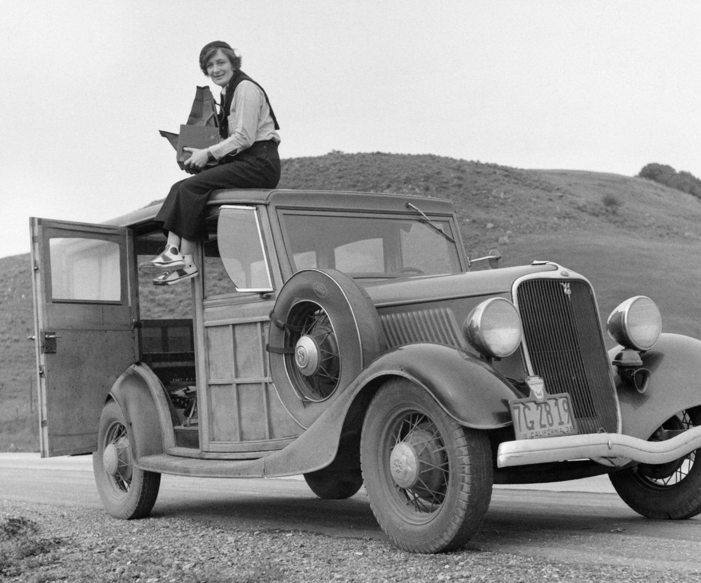
Première · Voie générale et technologique · Voie professionnelle
Through the Lens: Photos Power Tried to Silence
A learning journey that starts with Dorothea Lange
In 1929, alone on a rock in a mountain storm, she made a decision: “take pictures and concentrate upon people, only people, all kinds of people, people who paid me and people who didn’t.”
Dorothea Lange (1895 to 1965), American documentary photographer. Her portrait of a mother in a camp of pea pickers, Migrant Mother (1936), became the face of the Great Depression. In 1942, the government that employed her withheld her photographs of Japanese Americans forced out of their homes.
Dorothea Lange, Resettlement Administration photographer, in California, February 1936, with her Graflex camera · Photo: Rondal Partridge, Library of Congress (LC-DIG-fsa-8b27245), Wikimedia Commons, public domain · Quotation: Getty Education
Message à transmettre à la classe
Dorothea Lange, la photo d’une mère
Pourquoi cette photo ?
En mars 1936, en Californie, une photographe s’arrête dans un camp de cueilleurs de petits pois. La récolte a gelé, il n’y a plus de travail. Dorothea Lange y photographie une femme de 32 ans, Florence Owens Thompson, entourée de ses enfants. Elle prend six clichés en une dizaine de minutes.
L’un d’eux, Migrant Mother, devient l’image la plus connue de la Grande Dépression américaine.
Dorothea Lange boitait depuis une polio contractée enfant. Elle disait que ce handicap l’avait rendue attentive à ceux qu’on ne regarde pas.
Ce que ça dit de nous aujourd’hui
Des familles qui suivent le travail d’une région à l’autre, des parents qui se privent pour nourrir leurs enfants, il y en a encore. En France aussi.
Et il y a une autre question : Florence Thompson n’a jamais touché un centime pour cette photo, qui a fait le tour du monde. Elle a longtemps eu le sentiment qu’on s’était servi d’elle. A-t-on le droit de photographier la misère des autres ?
Ce que vous allez peut-être ressentir
De la tristesse, sûrement. Peut-être aussi une gêne, celle de regarder quelqu’un qui ne pouvait pas refuser d’être regardé.
Ce qui n’a pas bougé depuis 1936
Regardez la main de cette femme, posée contre son visage. Elle s’inquiète pour demain. Ce geste-là, beaucoup de parents le font encore le soir, à la table de la cuisine.
Madame Carole Paoli Pompougnac
“See what is really there. Look at it. Look at it.”
Dorothea Lange, as remembered by her granddaughter, the filmmaker Dyanna Taylor
Introduction
What is at stake in this learning journey
Every day, you see hundreds of photos. Most of them disappear in a second. A few stay with you for the rest of your life. In 1936, a woman with a heavy camera took five photos of a mother and her children in a tent in California. One of them is now among the most famous photographs ever taken. It made people care. It also made the woman in the picture unhappy.
Photos have power. They can make a government act, and a government can try to control them: by commissioning them, by choosing which ones are published, by putting them away in a drawer. Photographers have power too: they choose what to show, what to leave out, and sometimes what to remove. So, when you look at a photo, the real questions are: Who took it? Who paid for it? Who is in it, and who decides what we see?
On this learning journey, you will follow Dorothea Lange from her portrait studio to the roads of the Great Depression, read Migrant Mother like an expert, discover the thumb that disappeared from it, and look at the photographs of 1942 that the government kept away from the public during the war. You will listen to the songs of the Dust Bowl, read poems by Walt Whitman and Langston Hughes, compare a famous painting with a photograph, and watch extracts from a documentary made by Lange’s own granddaughter. You will read the news like a journalist, debate like museum curators, train your voice in a demanding pronunciation lab, and finally create your own class exhibition, with captions and audio guides. Art is part of every lesson: it is one more way of looking at the world.
Why a learning journey?
Some words lock learning in place: one step after another, behind closed doors. A journey opens the road. You set off with your suitcase, you meet places, voices and ideas you did not expect, and you come back richer, with memories and knowledge that are truly yours. Nobody wants to travel to a dull destination: this one has been chosen to be worth the trip.
Pourquoi un learning journey ?
Le mot « séquence » enferme : une étape après l’autre, portes closes. Un voyage, lui, ouvre la route. Les élèves partent avec leur valise, rencontrent des lieux, des voix et des idées inattendus, et reviennent enrichis de souvenirs et de savoirs qui leur appartiennent. On ne donne à personne l’envie de partir en promettant une destination terne : la destination doit valoir le voyage.
How every lesson works
The route
- 1 · Out in the field → from the portrait studio to the roads of the Depression
- 2 · Migrant Mother → reading a photo, and the woman behind it
- 3 · The thumb → when a photo is changed: fact, fiction and ethics
- 4 · Impounded → 1942: the photos the government withheld
- 5 · The film → Grab a Hunk of Lightning, a documentary by Lange’s granddaughter
- 6 · Pronunciation lab → read a caption like a curator
- 7 · Read the news → two articles, one story; the passive; the curators’ debate
- 8 · Final task → our class exhibition, with captions and audio guides
- On placement · PFMP → the same journey, week by week, from your workplace
L’intérêt de ce voyage dans les programmes
Ce voyage répond à l’axe 3 « Art et pouvoir » du programme de première et à deux de ses objets d’étude : « L’art, les artistes et le pouvoir » (le document d’accompagnement d’éduscol y cite nommément Dorothea Lange) et « S’engager dans la presse et les médias : dessins, caricatures et photojournalisme ». Il fait travailler les cinq activités langagières et la médiation, la lecture de l’image, l’esprit critique face aux images retouchées et une prononciation exigeante.
Un seul contenu, aussi riche et aussi exigeant pour tous. Il n’existe pas de version allégée : élèves de la voie générale et technologique et élèves de la voie professionnelle travaillent les mêmes documents, les mêmes tâches et la même tâche finale. Seuls les textes de référence et les formats d’épreuve sont présentés côte à côte ci-dessous. Les trois niveaux (B1, B1+, B2) se choisissent selon les besoins de chaque élève, jamais selon sa voie.
Fil conducteur : élever le niveau sans effrayer les élèves. Un contenu exigeant, qui doit impressionner, rendu accessible par des étapes claires, des modèles, des enregistrements et trois niveaux d’exigence. Pas une minute sans objectif : chaque séance commence par une tâche d’entrée en cours et chaque minute est prévue dans le minutage proposé au professeur. Les supports sont variés et tissés dans chaque séance : photographies, peinture, chansons, poèmes, vidéos, presse, film documentaire.
| Activité langagière (CECRL) et compétence | Où dans le voyage |
|---|---|
| Listening | Enregistrements des séances 1 à 5 et 7, vidéo du MoMA (séance 1), bande-annonce du documentaire (séance 5), chansons de Woody Guthrie, de Bing Crosby et de Bruce Springsteen (séances 1, 2 et 3), reconnaissance des accents américain et britannique (séances 4 et 7) |
| Reading | Biographie et frise (séance 1), légendes d’archives (séances 2 et 4), article du New York Times (2017) comparé au rectificatif des Archives nationales américaines (séance 7), poèmes de Walt Whitman et de Langston Hughes (séances 1 et 4) |
| Expression écrite | Tâches à trois niveaux à chaque séance, légendes et textes de commissaire d’exposition (séances 2, 7 et 8) |
| Expression orale en continu | Description de photographies, monologue théâtral (séance 5), audioguide enregistré et présentation de l’exposition (séance 8) |
| Interaction orale | Débat des commissaires d’exposition (séance 7), échange de 5 minutes après la présentation (séance 8) |
| Médiation | Expliquer en anglais simple la différence entre les deux versions de Migrant Mother (séance 3) ; rendre compte en anglais d’un désaccord entre deux sources (séance 7) |
| Phonologie et prosodie | Un atelier « Say it right » à chaque séance, un laboratoire complet (séance 6) : accent de mot (photograph, photographer, photographic), suffixe -ate, lettres muettes, consonnes affriquées, liaison, intonation, emphase |
| Grammaire | La voix passive et la structure causative have something done (séance 7), réemployées dans les légendes et l’audioguide (séance 8) ; discours rapporté en appui (séances 2 et 7) |
| Esprit critique | Qui commande une image, qui la retouche, qui la retient ; fait et opinion ; vérification des sources ; images retouchées aujourd’hui (séances 3, 4 et 7) |
Ancrage dans les programmes et le référentiel
Voie générale et technologique · Première
Programme d’anglais pour les classes de lycée général et technologique (BO n° 22 du 29 mai 2025, annexe 4).
Axe 3 « Art et pouvoir » : « Comment l’expression artistique, quelles qu’en soient les formes, peut-elle représenter le pouvoir institutionnel, le renforcer ou au contraire le remettre en cause ? » Objets d’étude possibles retenus : « L’art, les artistes et le pouvoir », « S’engager dans la presse et les médias : dessins, caricatures et photojournalisme », et en appui « L’art comme vecteur de résistance ou de reconnaissance ».
Éduscol, « Repères culturels : objets d’étude possibles » (2025), objet « L’art, les artistes et le pouvoir » : « Dorothea Lange, autre figure emblématique d’artiste ayant mis son talent au service de l’histoire, a suscité une prise de conscience nationale ; son œuvre, empreinte d’empathie et d’humanité, a participé au soutien du programme du New Deal. »
Lexique proposé par le programme de première. « Les représentations du pouvoir », B1 : well-informed, to subvert, to disrupt, to challenge conventional images, iconic paintings, symbolic of, to document, to convey a message, to expose injustice ; B1+ : through a lens, to debunk, to chronicle, visual rendition, to heighten public awareness, to portray, portraiture. « Art et engagement », B1 : to witness, to testify, to encourage identification, impactful, a photograph, iconography ; B1+ : exhibition curator, to capture a feeling, to capture a mood, out in the field, to immerse viewers, archives, Depression-era paintings, a sense of resilience.
Phonologie (première, B1) : « Recourir de façon systématique aux schémas intonatifs », lettres muettes, voyelles courtes et longues, « les consonnes affriquées /ʧ/ et /ʤ/ », « marquer l’emphase ou souligner les mots-clés », « règles d’accentuation du mot selon sa composition » ; B1+ : « prononcer correctement le suffixe -ate », reconnaître les accents. Grammaire : « la voix passive », « passer du discours direct au discours rapporté », structures causatives (B1+).
Associer deux axes. Le programme précise : « Ils peuvent aussi en associer deux, reliés par une problématique commune, dans une même séquence. » En terminale, ce voyage peut être repris et prolongé avec l’axe 2 « Territoire et mémoire » (objet « La construction des lieux de mémoire » : Manzanar, l’internement de 1942) et l’axe 4 « Enjeux et formes de la communication » (objet « Chacun sa vérité ? Le défi du complotisme » : une image retouchée, un récit de presse corrigé).
Voie professionnelle
Programme de langues vivantes des classes préparant au baccalauréat professionnel (arrêté du 3 avril 2019, BO spécial n° 5 du 11 avril 2019). Du niveau B1 aux niveaux B1+/B2, l’élève s’entraîne notamment à :
- « comprendre, analyser et rendre compte d’articles de presse, de documentaires, d’affiches, de spots publicitaires, de campagnes d’information » (séances 5 et 7) ;
- « comprendre, analyser et rendre compte d’un événement historique ou d’actualité » (séances 1 à 4) ;
- « repérer dans un propos les éléments relevant de l’argumentation » et « identifier les divergences de points de vue » (séance 7) ;
- « s’exprimer à l’écrit et à l’oral au sujet d’un thème ou objet culturel » (séance 8) ;
- « participer à un débat, à une table ronde, défendre et justifier sa position, réfuter celle de son interlocuteur, chercher à convaincre » (séance 7).
Thèmes d’étude : « grandes œuvres célèbres (littérature, musique, peinture, sculpture, cinéma, photographie) », « grands événements historiques, dates marquantes », « personnages historiques et personnalités célèbres », « médias (presse, radio, télévision), réseaux sociaux et internet (pratiques et enjeux) ». Le programme demande aussi aux professeurs de prendre part à « la lutte contre la manipulation de l’information » et rappelle que l’entraînement à la prise de parole « demande un travail spécifique et régulier en vue de l’amélioration de la prononciation ».
Épreuve (arrêté du 17 juin 2020, annexe V, BO n° 30 du 23 juillet 2020) : la séance 8 entraîne à la situation B, 10 minutes, avec une expression orale en continu de 5 minutes maximum puis une interaction de 5 minutes maximum ; la prise de parole « ne peut pas consister en la lecture d’un texte préalablement rédigé in extenso ».
PFMP : un parcours dédié permet de suivre le même voyage pendant les périodes de formation en milieu professionnel (onglet « On placement · PFMP »).
Niveaux de référence, présentés côte à côte (ils ne changent ni les documents ni les tâches) :
| Texte officiel | Ce qu’il fixe |
|---|---|
| Voie générale et technologique | La classe de première « marque la consolidation du niveau B1 » et son dépassement ; niveaux visés en fin de cycle terminal : B2 en LVA, B1 en LVB (BO n° 22 du 29 mai 2025). |
| Voie professionnelle | LVA et LVB : niveau visé B1, B2 (programme de 2019). |
Sources : programme d’anglais LGT (BO n° 22 du 29 mai 2025, annexe 4) ; éduscol, « Repères culturels : objets d’étude possibles », anglais, 2025 ; programme de langues vivantes de la voie professionnelle (BO spécial n° 5 du 11 avril 2019) ; définition de l’épreuve de langue vivante du baccalauréat professionnel (BO n° 30 du 23 juillet 2020).
Why this learning journey fits the programme
The official programme for Première asks: how can art represent institutional power, reinforce it or challenge it? It suggests studying “art, artists and power” and “photojournalism”, and it names Dorothea Lange as an artist who raised national awareness. The vocational programme asks you to understand and analyse press articles, documentaries and historical events, to talk about famous works of art, including photography, and to debate. In both cases, you are expected to look at images with a critical eye and to speak clearly and confidently.
Mode d’emploi. Huit onglets de séances, soit un socle de onze heures de 55 minutes : une heure pour chacune des séances 1 à 6, trois heures pour « Read the news » (presse, puis la voix passive, puis le débat) et deux heures pour la tâche finale, puis une heure de présentation sous forme de visite de l’exposition, soit environ douze heures au total. Les passages individuels de 10 minutes au format de la situation B peuvent ensuite se répartir sur les heures d’entraînement à l’oral de l’année. La projection intégrale du documentaire (1 h 50) est facultative. Chaque séance s’ouvre sur une tâche d’entrée en cours (bell-ringer) de cinq minutes, puis suit le minutage indiqué dans l’encadré professeur. Les réponses s’affichent avec le bouton Answers ; l’aide en français avec + Français.
Astuce pratique. Le bell-ringer est visible à l’écran avant l’entrée des élèves : ouvrez la séance, cliquez sur Project full screen avant la sonnerie. Les élèves se mettent au travail en entrant, et vous faites l’appel pendant qu’ils travaillent.
Sensibilité. Les photographies de 1942 montrent une injustice d’État visant des citoyens en raison de leur origine. Elles se regardent sans détour et sans pathos : les légendes d’origine et les faits suffisent.
Les principes qui fondent ce voyage sont réunis dans la Charte du cours →
Look at the photo. Work alone, in your notebook.
- Where is the woman? What is she doing?
- What is she holding? Why is she sitting on the car?
- Guess her job, and finish: I think she is… because…
Useful: in the foreground · in the background · on the roof of · a camera · the countryside · a road · she seems to be…
Entrée en cours. Le cadre est affiché avant l’arrivée des élèves (bouton Project full screen). Ils écrivent dès qu’ils entrent ; vous faites l’appel pendant ce temps. Réutilisation (minutes 5 à 9) : trois élèves lisent leur hypothèse ; on révèle : Dorothea Lange, photographe employée par une agence fédérale, en février 1936, l’appareil Graflex sur les genoux (on le tenait à hauteur de taille, en regardant vers le bas). Sur le toit, elle voit plus loin et plus haut : c’est déjà une façon de regarder.
Lesson 1 · Axis 3 · Art and power
Out in the field: from the portrait studio to the street

Who was Dorothea Lange?
Dorothea Lange (1895 to 1965) was an American photographer. For years, she made portraits of rich families in her studio in San Francisco. During the Great Depression, she left the studio and went out into the street, then into the fields.
From 1935, a government agency paid her to photograph farm workers who had lost everything. Her photos were sent to newspapers to show the country what was happening, and to support the New Deal, President Roosevelt’s programmes to fight the crisis.
Her name is pronounced (“lang”).
From the studio to the field
Computer voice: Heart (American English).
Transcript (only after the two listenings)
Dorothea Lange was born in Hoboken, New Jersey, in 1895. When she was seven, she caught polio, and for the rest of her life she walked with a limp. Many years later, she said that it was perhaps the most important thing that had happened to her: it had formed her, guided her, helped her, and humiliated her. In 1918, she arrived in San Francisco, and within a year she had opened her own portrait studio. Wealthy families paid her to take their portraits. Then came the Great Depression. In 1933, she left her studio with her camera and photographed a breadline in the street, a line of hungry men waiting for food handed out by charity. From 1935, she worked for a government agency, the Resettlement Administration, which later became the Farm Security Administration. Her job was to photograph farm workers who had lost everything, so that the whole country could see what was happening. With her second husband, the economist Paul Taylor, she interviewed the people she photographed. She worked out in the field, with a large, heavy camera, often held at waist level.
First listening: the big picture
Second listening: the details
Milestones
1895 → Born Dorothea Nutzhorn in Hoboken, New Jersey. She later took her mother’s maiden name, Lange.
1902 → Polio, at the age of seven. She walks with a limp for the rest of her life.
1918 → She arrives in San Francisco and, within a year, opens her own portrait studio.
1929 → Caught in a mountain storm, she decides to photograph “people, only people, all kinds of people”.
1933 → White Angel Breadline: her first photograph taken in the street. Her clients ask: “What are you going to do with this kind of thing?”
1935 → She joins the Resettlement Administration (later the Farm Security Administration) and marries the economist Paul Taylor.
1936 → Migrant Mother, Nipomo, California (lesson 2).
1939 → An American Exodus, a book of photos and words made with Paul Taylor.
1942 → She photographs the forced removal of Japanese Americans for the War Relocation Authority (lesson 4).
1965 → She dies on 11 October, while preparing a retrospective of her work at the Museum of Modern Art in New York. It opens in 1966.
“What are you going to do with this kind of thing?”
In 1933, Lange hung her photograph of the breadline on the wall of her studio. Her rich clients looked at it and asked: “What are you going to do with this kind of thing?” She later said: “I didn’t know. But I knew that picture was on my wall, and I knew that it was worth doing.” She also worked with a method that you can still use today: she made herself almost invisible. She called it her “cloak of invisibility”, a quiet way of moving that allowed her to observe people without disturbing them.
Your turn, in one sentence: Have you ever done something that people around you did not understand, because you knew it was worth doing?
Two ways of seeing rural America
A painted farm, a photographed farm
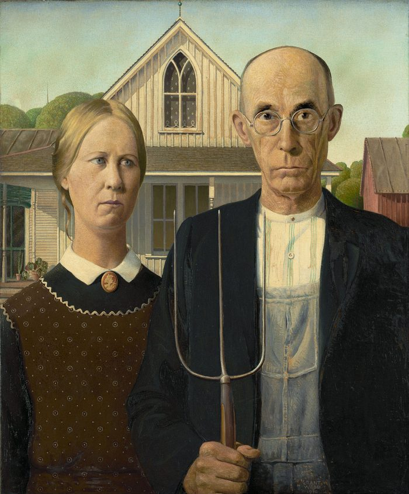
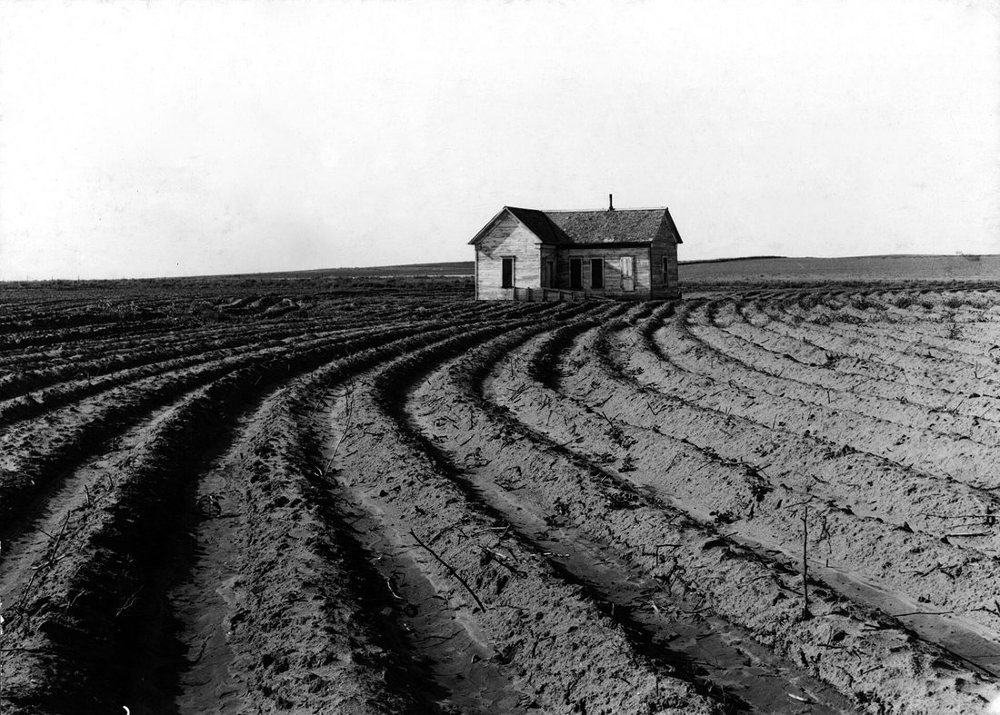
Grant Wood painted American Gothic in 1930, at the very beginning of the Depression. Eight years later, Lange photographed a farmhouse in Texas. The family who rented the land had gone: tractors now did their work.
| Compare | American Gothic (1930) | “Tractored out” (1938) |
|---|---|---|
| Who is in the picture? | ||
| What do you see in the foreground? | ||
| One adjective for the mood |
Speak (B1+): “The painting is symbolic of… whereas the photo documents…” Which image tells you more about the Depression? Why?
Woody Guthrie, “Do Re Mi” (1940)
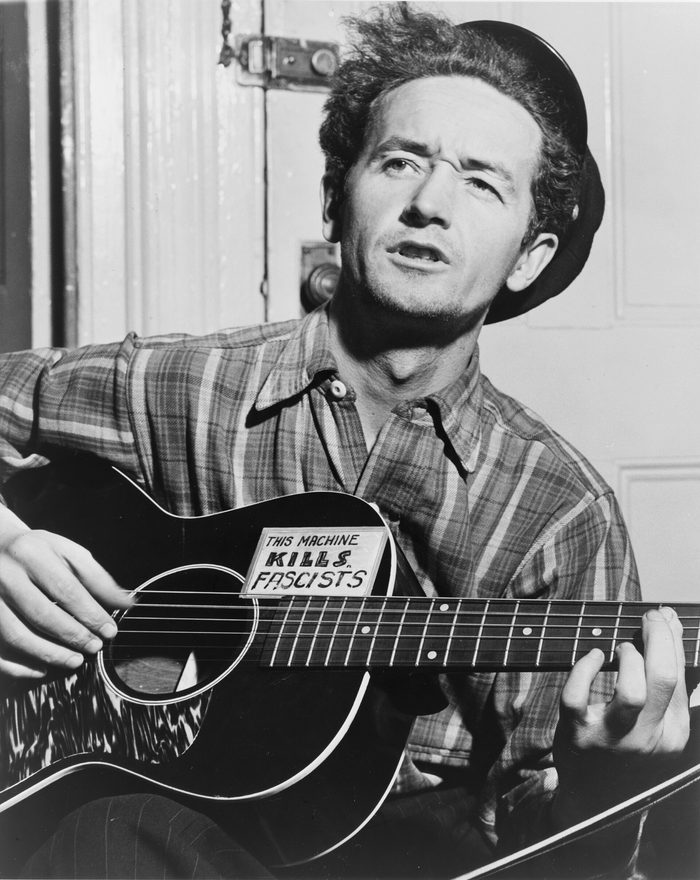
Woody Guthrie (1912 to 1967) grew up in Oklahoma and Texas. In the 1930s, like the families in Lange’s photos, he travelled west to California. In April 1940, he recorded Dust Bowl Ballads, songs about the families driven away by drought, dust storms and poverty. In “Do Re Mi”, he warns them:
“California is a garden of Eden, a paradise to live in or see;
But believe it or not, you won’t find it so hot
If you ain’t got the do re mi.”
Lyrics: woodyguthrie.org (short extract quoted for study) · Listen: official recording, Woody Guthrie (YouTube)
Listen to the song once, then answer
Walt Whitman, “I Hear America Singing” (1860)
I hear America singing, the varied carols I hear,
Those of mechanics, each one singing his as it should be blithe and strong,
The carpenter singing his as he measures his plank or beam,
(…)
Each singing what belongs to him or her and to none else,
carols: joyful songs · blithe: happy, carefree · plank, beam: long pieces of wood
In the nineteenth century, Walt Whitman celebrated American workers, each one proud of his or her work. Seventy years later, Lange photographed workers who had lost their work.
Write (all levels): one line in Whitman’s style about a Lange photo: I see America waiting, … / I see America on the road, …
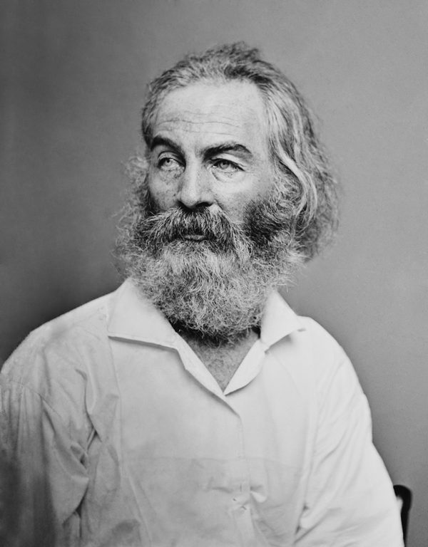
Poem in the public domain (Leaves of Grass).
MoMA: “Dorothea Lange: Words & Pictures” (3 minutes)
The Museum of Modern Art, New York, 2020 · Open on YouTube · The exhibition page
Toward the end of her life, Lange wrote: “All photographs, not only those that are so-called ‘documentary’, (…) can be fortified by words.”
- Watch once without sound: list three places where Lange’s photographs appeared (on a wall, in a book…).
- Watch with sound: what does fortified mean here? Why would a photographer need words?
Words from the official programme
Match each expression with its meaning.
Word stress: one family, three stress patterns
In English, syllables do not all have the same weight. In the photo- family, the strong syllable moves. Rule: with -er and -y after -graph-, the stress goes to -tog-; with -ic, it falls just before the suffix.
| Word | Stress |
|---|---|
| ●○○ first syllable | |
| ○●○○ second syllable | |
| ○○●○ just before -ic | |
Each word is said once. Listen, then repeat it three times, louder and longer on the red syllable.
Your turn: find the strong syllable
Two sentences to master
Shadowing means speaking at the same time as the voice, like a shadow. Step 1: listen to the slow version. Step 2: speak with the slow version. Step 3: speak with the normal version, without reading.
Speak or write: out in the field
In 1933, Dorothea Lange left her studio because she could no longer photograph rich families while hungry men were waiting for bread in the street. She wanted to photograph real people and real problems. American Gothic shows a proud farming couple in front of their house, whereas “Tractored out” shows an empty house: the people have gone, and machines have replaced them.
Lange was paid by the government, and her photos supported the government’s programmes. Does that make her photos less true? Can art serve power and still tell the truth?
Dorothea Lange (1895-1965), photographe américaine, d’abord portraitiste de familles aisées à San Francisco, quitte son studio pendant la Grande Dépression. À partir de 1935, une agence fédérale (Resettlement Administration, puis Farm Security Administration) l’emploie pour photographier les ouvriers agricoles ruinés : ses images, diffusées dans la presse, soutiennent le New Deal. Retiens l’accentuation : PHOtograph, phoTOGrapher, photoGRAphic.
| Minutes | Déroulement (55 min) |
|---|---|
| 0 → 5 | Bell-ringer affiché avant l’entrée, appel pendant que les élèves écrivent. |
| 5 → 9 | Réutilisation : hypothèses, révélation de l’identité de Lange. |
| 9 → 20 | Deux écoutes avec les deux quiz, puis transcription ; frise lue en 2 minutes. |
| 20 → 30 | Peinture et photographie : tableau de comparaison en binômes, mise en commun orale avec whereas. |
| 30 → 36 | Chanson de Woody Guthrie : une écoute, quiz, ironie du « garden of Eden ». |
| 36 → 44 | Say it right : famille photo-, répétition chorale puis individuelle, quiz, shadowing. |
| 44 → 53 | Production à trois niveaux ; lecture de deux productions. |
| 53 → 55 | Ticket de sortie : une phrase « Today I learnt that… » avec un mot de la famille photo- souligné. |
| Prolongement | Poème de Whitman (10 min, ou à la maison : une ligne « I see America… ») ; vidéo du MoMA (3 min) en ouverture de la séance 2 ou à la maison ; encadré « Real life ». |
Moments clés de l’heure
Avant la sonnerie : photo du bell-ringer projetée et une dizaine de consignes sur papier (retardataires, panne).
Transitions : la consigne du quiz suivant est visible sous le lecteur avant chaque écoute (« question 1 only ») ; à 20, le tableau de comparaison est déjà sur la fiche ; à 30, on lance la chanson sans commentaire, le quiz est sous les yeux.
Fin de cours (53 → 55) : personne ne range avant le ticket de sortie ; on le ramasse à la porte, une feuille par élève. Phrase à compléter : « Today I learnt that… ».
Classe suivante : le bell-ringer de la classe suivante est déjà ouvert dans un autre onglet ; on l’affiche dès que les élèves sortent. L’appel et PRONOTE se font pendant ce bell-ringer ; le dépôt des exercices sur l’ENT attend la pause ou la fin de journée.
Si la technique lâche : vous lisez la transcription deux fois (lentement, puis normalement) ; photos, frise et trois vers de la chanson sont sur la fiche papier ; la vidéo du MoMA passe en prolongement.
Keeping the room calm · une classe au travail, sans tension
Carte de secours (5 à 10 min, seul, sur papier) : « Look at the bell-ringer photo. Write five things you can see: There is… / There are… Then write one word for the feeling of the photo. » Quelques exemplaires imprimés restent sur le bureau.
Consignes toujours visibles : la consigne en cours et la suivante restent écrites au tableau ou en bas de l’écran : un élève qui a décroché une minute sait où reprendre sans avoir à demander devant tout le monde.
Recadrer en privé : s’approcher, se mettre à sa hauteur, parler bas. Parler de la tâche, pas de l’élève (« Question 2 : tu peux commencer par la première ligne »). Proposer un choix simple : la tâche de la classe ou la carte de secours.
Placement et rôles : on garde le plan de classe habituel ; une place plus à l’écart peut être proposée comme un choix, jamais comme une punition. Binômes fixés à l’avance et affichés. Rôles utiles pour un élève qui a besoin de bouger ou d’un cadre : distribuer les fiches, lancer le minuteur.
Si un élève refuse : pas de bras de fer, pas de remarque devant la classe. On pose la carte de secours sur la table, on note discrètement (nom, minute, ce qui a été proposé) et on continue le cours. Un mot calme en tête-à-tête à la sortie suffit souvent. Certains jours, un élève ne suivra pas : on l’accepte, le cours continue pour les autres.
Sources : Getty Education, « Dorothea Lange’s Milestones » (polio, studio, tempête de 1929, White Angel Breadline 1933, Paul Taylor, FSA, Graflex, citations) ; Library of Congress et Wikimedia Commons (photographies, légendes d’origine) ; Art Institute of Chicago (American Gothic, 1930 ; domaine public aux États-Unis faute de renouvellement du droit d’auteur, Grant Wood mort en 1942) ; woodyguthrie.org et Smithsonian Folkways (« Do Re Mi », enregistré le 26 avril 1940, Dust Bowl Ballads) ; MoMA, exposition « Dorothea Lange: Words & Pictures » (9 février-19 septembre 2020). Charte du cours →
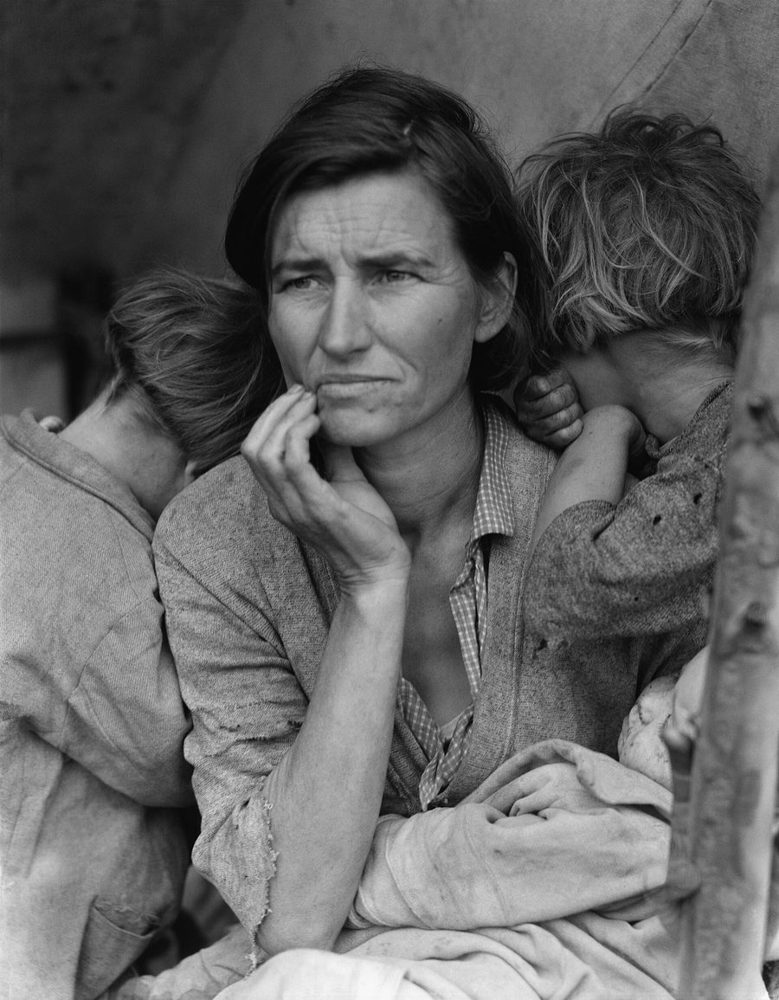
Look at the photo for one full minute, in silence. Then write:
- five words for what you see;
- three words for what you feel;
- one question you would like to ask the woman.
Entrée en cours. Cadre projeté avant l’entrée ; appel pendant l’écriture. Réutilisation (minutes 5 à 10) : deux colonnes au tableau, I see et I feel ; on les remplit avec les mots des élèves. Les questions à la femme sont gardées : on y répondra avec l’écoute (minute 25), puis avec ses propres mots de 1978.
Lesson 2 · Reading a photograph
Migrant Mother (1936): reading a photo
How to read a photo like an expert
| Look at… | Useful language |
|---|---|
| Framing | a close-up · a medium shot · a long shot · the frame is tight / wide |
| Composition | in the foreground · in the background · in the centre · on the left / right · lines lead the eye to… |
| Light | soft light · harsh light · in the shadow · contrast between… |
| The gaze | she looks into the distance · she avoids the camera · the children turn away from us |
| Meaning | it conveys… · it is symbolic of… · it captures a mood of… · a sense of resilience |
Describe precisely
Five exposures, closer and closer
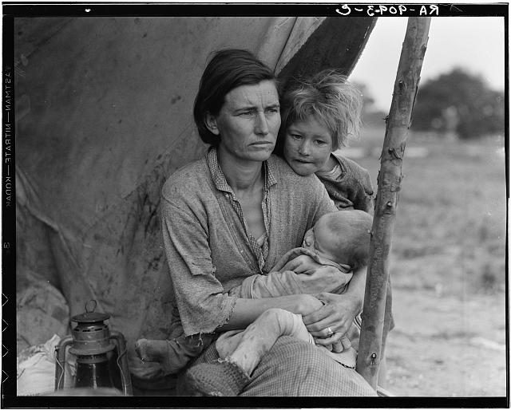
In 1960, Lange wrote: “I made five exposures, working closer and closer from the same direction.”
Compare the two photos. What can you see in this wider photo that you cannot see in the close-up? What did Lange gain, and what did she lose, by going closer?
Nipomo, 1936 → Modesto, 1978
Computer voices: Michael, then Heart (American English).
Transcript (only after the two listenings)
In March 1936, Dorothea Lange was finishing a month-long trip, photographing migrant farm workers in California. In a camp of pea pickers near Nipomo, the early pea crop had failed, and most of the families had nothing left. Lange saw a mother with her children in a tent. In her own words, written in 1960, she made five exposures, working closer and closer from the same direction. She did not ask the woman’s name. The photos were published in The San Francisco News and in other newspapers. One of them became known as Migrant Mother.
For more than forty years, nobody knew who the woman was. Then, in 1978, a reporter from The Modesto Bee found her. Her name was Florence Owens Thompson. She was not happy about the famous picture. She told the reporter that she wished Lange had not taken it, that Lange had not asked her name, and that she had never received a copy. When she died in 1983, her children had these words carved on her tombstone: Migrant Mother, a legend of the strength of American motherhood.
True or false?
Two voices, one photo
“I did not ask her name or her history. (…) There she sat in that lean-to tent with her children huddled around her, and seemed to know that my pictures might help her, and so she helped me. There was a sort of equality about it.”
Dorothea Lange, “The Assignment I’ll Never Forget”, Popular Photography, February 1960, quoted by the Library of Congress
“I wish she hadn’t taken my picture. I can’t get a penny out of it. She didn’t ask my name. She said she wouldn’t sell the pictures. She said she’d send me a copy. She never did.”
Florence Owens Thompson, interviewed by Emmett Corrigan of The Modesto Bee in 1978; see PBS, The Art Assignment, “Whose Migrant Mother was this?”
Who had the power?
The photo was paid for by the government, so it was in the public domain: neither Lange nor Florence Thompson was paid each time it was printed. Discuss in pairs, then write two sentences:
- Lange says there was “a sort of equality”. Thompson says she “can’t get a penny out of it”. Who is right? Can both be right?
- Report their words: Lange said that she had not asked… · Thompson said that she wished…
A caption is also a story. According to MoMA’s curator Sarah Meister, the reports used to write the captions in 1936 described the general circumstances in the camps, not Thompson’s own family. Words can get a photo wrong.
“Brother, Can You Spare a Dime?” (1932)
One year before Lange’s first photo in the street, Broadway was already singing about the breadlines. In this song by Yip Harburg (words) and Jay Gorney (music), a man who built the country now stands in line for food. Bing Crosby recorded it in October 1932; the Library of Congress added his recording to its National Recording Registry in 2013.
“Why should I be standing in line
Just waiting for bread?”
Source and essay: Library of Congress, National Recording Registry (short extract quoted for study)
Link the documents: which photo of lesson 1 could illustrate these two lines? Write a caption of ten words maximum.
Read a caption: pauses and falling tone
An archive caption is made of short blocks. Read it like a museum guide: a short pause after each block, and the voice falls at the end of each one (↘). Stress the words that carry the information.
New words:
Write: the caption Lange never wrote
Florence Owens Thompson and her children, Nipomo, California, March 1936. A mother looks into the distance, her hand at her chin, while two of her children hide their faces on her shoulders. Dorothea Lange did not ask her name. For more than forty years, the world knew her only as “Migrant Mother”.
Florence Thompson became the most famous face of poverty in America, but she was not asked, not named, and never paid. If someone posted your photo and it went viral, what rights would you want?
En mars 1936, près de Nipomo (Californie), Dorothea Lange photographie une mère et ses enfants dans un camp de cueilleurs de petits pois, après l’échec de la récolte. Elle ne demande pas son nom. La photo devient le symbole de la Grande Dépression. En 1978, un journaliste retrouve la femme : Florence Owens Thompson, qui regrette que la photo ait été prise et n’en a jamais tiré un centime. Pour lire une photo : cadrage, composition, lumière, regard, sens.
| Minutes | Déroulement (55 min) |
|---|---|
| 0 → 5 | Bell-ringer affiché avant l’entrée, appel pendant le travail. |
| 5 → 10 | Réutilisation : colonnes I see / I feel au tableau. |
| 10 → 20 | Lire une photo : tableau de langue, quiz « Describe precisely », comparaison avec la vue large. |
| 20 → 28 | Deux écoutes, vrai/faux, transcription. |
| 28 → 36 | Deux voix : citations de Lange (1960) et de Thompson (1978) ; discussion en binômes ; deux phrases au discours rapporté. |
| 36 → 44 | Say it right : lire une légende (pauses, intonation descendante), mots nouveaux. |
| 44 → 53 | Écriture de la légende à trois niveaux ; lecture de deux légendes. |
| 53 → 55 | Ticket de sortie : réponse à la question posée à la femme dans le bell-ringer. |
| Prolongement | Chanson « Brother, Can You Spare a Dime? » : lecture de l’encadré et légende de dix mots (10 min, ou en début de séance 3). |
Moments clés de l’heure
Avant la sonnerie : photo projetée et imprimée en une page (une pour deux) : la minute de silence peut commencer même si l’écran tarde.
Transitions : à 10, les deux colonnes I see / I feel restent au tableau et servent au quiz ; à 28, les deux citations sont déjà à l’écran, on forme les binômes avant de lire.
Fin de cours (53 → 55) : personne ne range avant le ticket de sortie ; on le ramasse à la porte, une feuille par élève. Le ticket reprend la question posée à la femme au début : la boucle est fermée.
Classe suivante : le bell-ringer de la classe suivante est déjà ouvert dans un autre onglet ; on l’affiche dès que les élèves sortent. L’appel et PRONOTE se font pendant ce bell-ringer ; le dépôt des exercices sur l’ENT attend la pause ou la fin de journée.
Si la technique lâche : les deux citations et la transcription se lisent à voix haute ; la comparaison des deux photos se fait sur la fiche ; les phrases de Say it right sont dites par vous, puis en chœur.
Keeping the room calm · une classe au travail, sans tension
Carte de secours (5 à 10 min, seul, sur papier) : « Draw the photo in four boxes: the face, the hands, the children, the background. Under each box, write one English word. » Quelques exemplaires imprimés restent sur le bureau.
Consignes toujours visibles : la consigne en cours et la suivante restent écrites au tableau ou en bas de l’écran : un élève qui a décroché une minute sait où reprendre sans avoir à demander devant tout le monde.
Recadrer en privé : s’approcher, se mettre à sa hauteur, parler bas. Parler de la tâche, pas de l’élève (« Question 2 : tu peux commencer par la première ligne »). Proposer un choix simple : la tâche de la classe ou la carte de secours.
Placement et rôles : on garde le plan de classe habituel ; une place plus à l’écart peut être proposée comme un choix, jamais comme une punition. Les citations sont lues par des volontaires seulement. Un élève peut être chargé de lancer et d’arrêter la minute d’observation.
Si un élève refuse : pas de bras de fer, pas de remarque devant la classe. On pose la carte de secours sur la table, on note discrètement (nom, minute, ce qui a été proposé) et on continue le cours. Un mot calme en tête-à-tête à la sortie suffit souvent. Certains jours, un élève ne suivra pas : on l’accepte, le cours continue pour les autres.
Sources : Library of Congress, guide « Dorothea Lange’s “Migrant Mother” Photographs » (légendes d’origine, cinq vues, récit de Lange dans Popular Photography, février 1960) ; PBS, The Art Assignment (citation de Florence Owens Thompson recueillie en 1978 par Emmett Corrigan, The Modesto Bee ; épitaphe) ; MoMA, Sarah Meister (sources des légendes : dépêches de presse décrivant le camp en général) ; Library of Congress, National Recording Registry (« Brother, Can You Spare a Dime? », Bing Crosby, octobre 1932, inscrit en 2013). Sujet sensible : la pauvreté d’une famille réelle ; on insiste sur la dignité et sur le droit à l’image. Charte du cours →
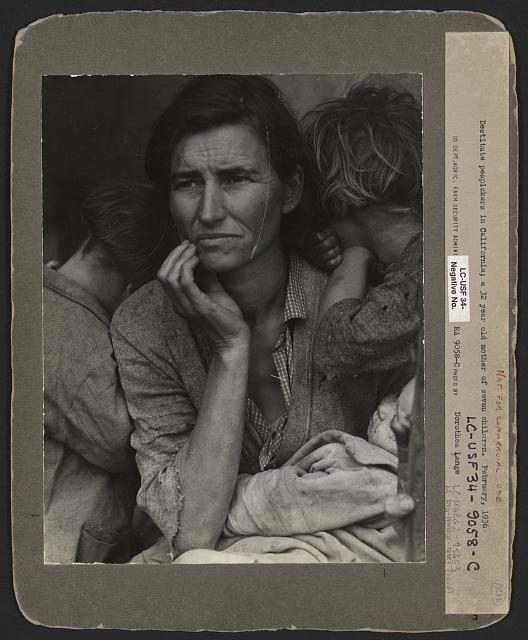
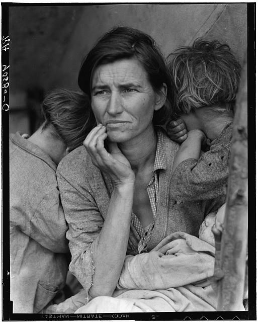
Spot the difference. Look at the bottom right-hand corner of each photo. Write one sentence: In version A, there is… but in version B…
Entrée en cours. Cadre projeté avant l’entrée ; appel pendant l’écriture. Réutilisation (minutes 5 à 8) : un élève vient montrer le pouce sur l’écran. Phrase attendue : In version A, there is a thumb holding the tent pole, but in version B it has disappeared. On note au tableau : The thumb was removed. Qui l’a enlevé ? Le passif cache l’agent : c’est l’entrée de la séance (et de la grammaire de la séance 7).
Lesson 3 · Fact, fiction and ethics
The retouched thumb: when a photo is changed
The thumb that disappeared
Computer voice: Michael (American English).
Transcript (only after the two listenings)
Look at the bottom right-hand corner of the earliest prints of Migrant Mother. You can see a thumb. It is Florence Thompson’s thumb, holding the tent pole. In 1939, three years after the photo was taken, Lange asked an assistant to remove the thumb from the negative: she thought it spoiled the picture. Her boss at the Farm Security Administration, Roy Stryker, was not happy. For him, these photographs were a documentary record, and a record should not be changed. Today, the Library of Congress keeps both versions: the retouched negative, and an older print in which the thumb is still visible.
Listen and complete
What may a photojournalist change?
Many news organisations follow the same principle: a news photo may be adjusted (light, contrast, a slight crop), but nothing may be added to it or removed from it. Decide for each change, then compare with your neighbour.
When news agencies say “kill”: two recent cases
A royal family photo (March 2024). On 10 March 2024, Kensington Palace released a Mother’s Day photo of Kate, Princess of Wales, with her three children. Hours later, the agencies AP, Reuters and AFP sent a “kill notice” asking newspapers to stop using it: the image had been manipulated (AP noticed an inconsistency in the alignment of Princess Charlotte’s left hand). The next day, the princess apologised: “Like many amateur photographers, I do occasionally experiment with editing.”
Sources: AP News, 11 March 2024 · The Guardian, 10 March 2024 · Reuters, 11 March 2024
The photo that was not a photo (April 2023). The German artist Boris Eldagsen won a category of the Sony World Photography Awards with a black and white image of two women. He then revealed that the image had been created with an AI generator and refused the prize: “AI is not photography,” he wrote.
Sources: BBC News, 18 April 2023 · Boris Eldagsen’s own statement
Compare with 1939: Lange removed a thumb to make her picture stronger. Was it the same thing as these two cases? It is similar because… · It is different because…
Tom Joad: a fictional man who became real
In 1939, the novelist John Steinbeck published The Grapes of Wrath: the Joad family leave Oklahoma for California, like the families in Lange’s photos. In 1940, Woody Guthrie turned the story into a ballad, “Tom Joad”, on Dust Bowl Ballads. In 1995, Bruce Springsteen brought the character back in “The Ghost of Tom Joad”, a song about the homeless of the 1990s:
“Families sleepin’ in their cars in the southwest
No home, no job, no peace, no rest”
Lyrics: brucespringsteen.net (short extract quoted for study) · Listen: official audio, Bruce Springsteen (YouTube)
| Florence Owens Thompson | Tom Joad | |
|---|---|---|
| Real or fictional? | a real woman | a fictional character |
| What did she / he become? |
Silent letters and emphasis
Silent letters. In thumb, the b is silent; in knew, the k is silent. Other examples: climb, doubt, know, write, half, listen, island.
Word: → tongue between the teeth for /θ/, lips closed for /m/, no /b/.
Emphasis. To correct a mistake, English speakers stress the word that changes. Listen: the voice jumps on didn’t and on assistant.
Your turn: correct these false statements with emphasis. The thumb was removed in 1936. (→ No, it was removed in nineteen thirty-NINE.) Roy Stryker was happy. (→ No, he was UNhappy.)
Speak or write: should a documentary photo ever be retouched?
It is true that every photograph is a choice: Lange chose the angle, the distance and the moment, and she took five exposures before keeping one. However, choosing what to show is not the same as changing what was there. When the thumb was removed, the photo stopped being an exact record of that afternoon in Nipomo. That is precisely why news agencies withdrew the royal photo in 2024.
You probably use filters on your photos every day. When does a filter become a lie? Does it depend on the photo, or on what you say about it?
En 1939, Lange fait effacer par un assistant le pouce de Florence Thompson, visible au premier plan, sur le négatif de Migrant Mother : elle le jugeait disgracieux. Son supérieur, Roy Stryker, désapprouve : une archive documentaire ne se retouche pas. La Library of Congress conserve les deux versions. Médiation : explique en anglais simple à un camarade la différence entre les versions A et B, et pourquoi elle compte. Prononciation : lettres muettes (thumb, knew) et emphase pour corriger une erreur.
| Minutes | Déroulement (55 min) |
|---|---|
| 0 → 5 | Bell-ringer (les deux versions) affiché avant l’entrée, appel pendant l’écriture. |
| 5 → 8 | Réutilisation : le pouce montré à l’écran ; The thumb was removed. Par qui ? |
| 8 → 17 | Deux écoutes, exercice à compléter, transcription. |
| 17 → 27 | « Think like an editor » : quiz individuel, puis confrontation en binômes ; encadré « Real life » (deux cas). |
| 27 → 35 | Tom Joad : lecture, écoute d’un extrait de Springsteen (1 min 30), tableau. |
| 35 → 43 | Say it right : lettres muettes, forme faible was, emphase corrective (exercice oral en binômes). |
| 43 → 53 | Production à trois niveaux ; lecture de deux productions. |
| 53 → 55 | Ticket de sortie : la médiation en anglais simple, en une phrase. |
Moments clés de l’heure
Avant la sonnerie : les deux versions côte à côte, projetées et sur papier (le pouce se voit mieux sur un bon tirage ou à l’écran : prévoir les deux).
Transitions : à 17, les élèves répondent seuls au quiz « editor » avant tout échange (2 minutes chrono), puis binômes ; à 27, l’extrait de Springsteen dure 1 min 30, pas plus.
Fin de cours (53 → 55) : personne ne range avant le ticket de sortie ; on le ramasse à la porte, une feuille par élève. La médiation en anglais simple tient en une phrase.
Classe suivante : le bell-ringer de la classe suivante est déjà ouvert dans un autre onglet ; on l’affiche dès que les élèves sortent. L’appel et PRONOTE se font pendant ce bell-ringer ; le dépôt des exercices sur l’ENT attend la pause ou la fin de journée.
Si la technique lâche : transcription lue par vous ; les deux cas réels se lisent sur la page imprimée ; la chanson est remplacée par la lecture des deux vers.
Keeping the room calm · une classe au travail, sans tension
Carte de secours (5 à 10 min, seul, sur papier) : « Find three differences between the two versions. Write: In version A, … In version B, … » Quelques exemplaires imprimés restent sur le bureau.
Consignes toujours visibles : la consigne en cours et la suivante restent écrites au tableau ou en bas de l’écran : un élève qui a décroché une minute sait où reprendre sans avoir à demander devant tout le monde.
Recadrer en privé : s’approcher, se mettre à sa hauteur, parler bas. Parler de la tâche, pas de l’élève (« Question 2 : tu peux commencer par la première ligne »). Proposer un choix simple : la tâche de la classe ou la carte de secours.
Placement et rôles : on garde le plan de classe habituel ; une place plus à l’écart peut être proposée comme un choix, jamais comme une punition. Les rôles « editor » et « archivist » sont attribués avant l’activité : chacun sait ce qu’il a à faire.
Si un élève refuse : pas de bras de fer, pas de remarque devant la classe. On pose la carte de secours sur la table, on note discrètement (nom, minute, ce qui a été proposé) et on continue le cours. Un mot calme en tête-à-tête à la sortie suffit souvent. Certains jours, un élève ne suivra pas : on l’accepte, le cours continue pour les autres.
Sources : Library of Congress, guide « Migrant Mother » (tirage non retouché LC-DIG-ppmsca-12883 montrant le pouce ; négatif retouché LC-USF34-9058-C) ; Sarah Meister, Dorothea Lange: Migrant Mother (MoMA, 2018), rapporté par PetaPixel le 30 novembre 2018 (retouche en 1939 par un assistant à la demande de Lange ; désaccord de Roy Stryker) ; AP, Reuters, The Guardian (photo de la princesse de Galles, 10 et 11 mars 2024) ; BBC News, 18 avril 2023, et déclaration de Boris Eldagsen sur son site ; brucespringsteen.net (« The Ghost of Tom Joad », Columbia, 21 novembre 1995). Charte du cours →
Read the three signs on this shop. Then answer in two sentences:
- Why would a shop owner need to write “I am an American”?
- What does the sign “SOLD” tell you about what happened next?
Entrée en cours. Cadre projeté avant l’entrée ; appel pendant l’écriture. Réutilisation (minutes 5 à 9) : on lit la légende d’origine (ci-dessous) : le propriétaire, diplômé de l’université de Californie, a posé la banderole le 8 décembre 1941, au lendemain de Pearl Harbor ; la boutique est fermée et vendue après l’ordre d’évacuation. Critique des sources : la légende d’origine situe la boutique au coin de 13th et Franklin Streets. Selon la notice de la Library of Congress (LC-USZ62-23602), cette adresse est erronée : d’après les annuaires de l’époque, consultés en 2017 par la chercheuse R. Yee de l’Oakland Museum of California, la boutique Wanto Co. se trouvait au 401-403 Eighth Street, à l’angle de Franklin Street ; elle appartenait à la famille Matsuda, et c’est Tatsuro Matsuda, diplômé de l’université de Californie, qui avait fait poser la banderole. Le nom « WANTO CO. » est d’ailleurs lisible sur la vitrine : une archive officielle peut se tromper, et le nom lisible sur la photo a permis de la vérifier.
Lesson 4 · Power, censorship and archives
Impounded, 1942: the photos the government kept quiet
Look closely: at the bottom of the window you can read WANTO CO. According to the Library of Congress, researchers at the Oakland Museum of California found in 2017 that the caption’s address was wrong: the Wanto Co. store stood at 401 to 403 Eighth Street, at the corner of Franklin Street, and belonged to the Matsuda family. Tatsuro Matsuda, the University of California graduate, had the sign made. An official caption can be wrong; the name on the window made it possible to check it. (Library of Congress, LC-USZ62-23602)
1942: a government order, a photographer, and a correction
Computer voices: Heart (American English), then Emma (British English).
Transcript (only after the two listenings)
In February 1942, two months after Japan attacked Pearl Harbor, President Franklin D. Roosevelt signed Executive Order 9066. It led to the forced removal of more than 110,000 people of Japanese ancestry from the West Coast of the United States. Most of them were American citizens. The government hired photographers to document the operation, and Dorothea Lange was one of them. She photographed families waiting for buses with identification tags on their coats, children pledging allegiance to the flag at school, and the camp at Manzanar, in the California desert. Lange believed that the whole episode was shameful. During the war, most of her photographs were withheld from the public, and some prints were marked with one word: impounded.
But be careful with the end of the story. In 2017, the National Archives of the United States published a correction. Its archivists explained that Lange’s photographs were transferred to the National Archives in 1946, with no restrictions on public use, and that they have been available online since 1998. The photos were withheld during the war. They were not hidden for sixty years.
Listen for the numbers and the facts
What Lange showed, and what she was not allowed to show

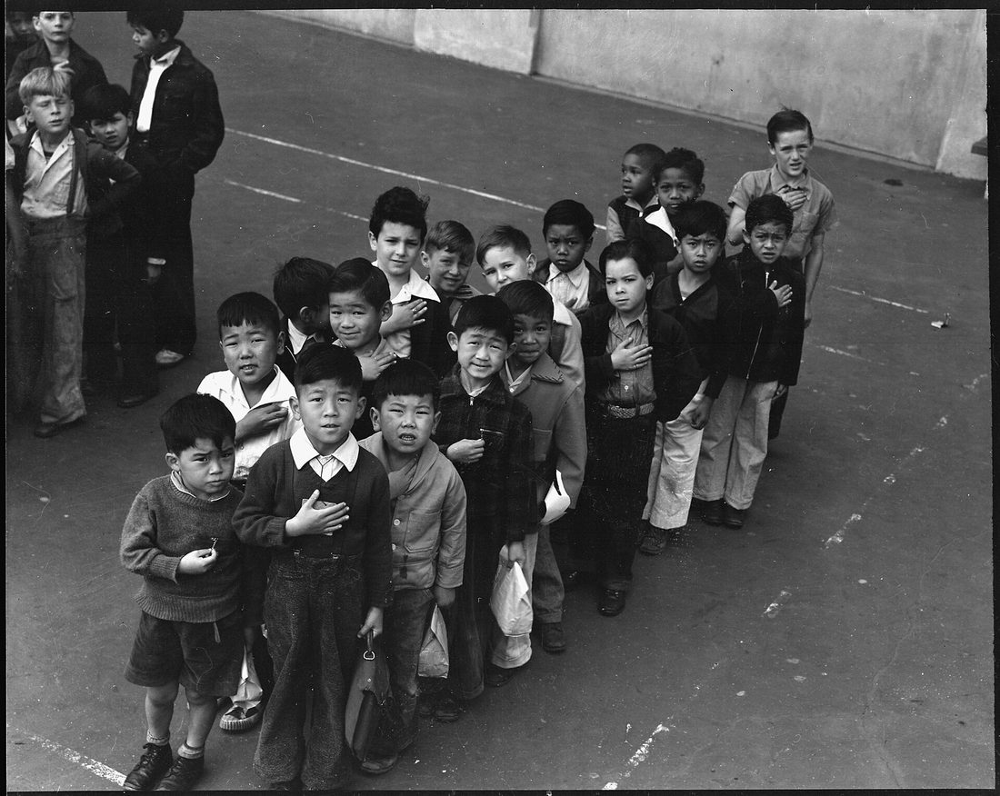
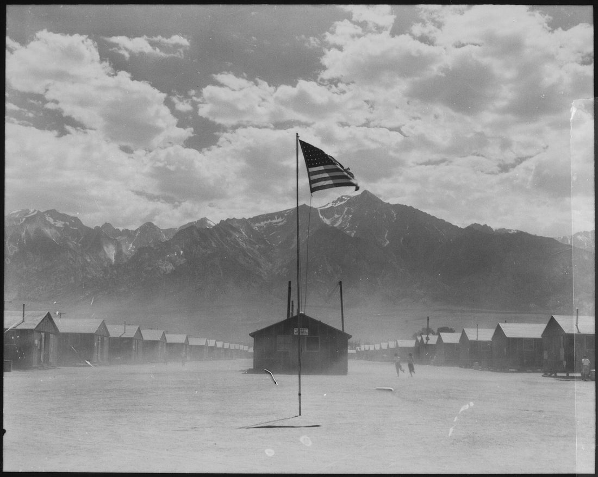
Match each photo with its original caption
According to The New York Times, the rules of the War Relocation Authority did not allow photographs of barbed wire, of guards with machine guns, or of any sign of protest in the camps; at least 26 of Lange’s images were marked “impounded”. So what can we see? In photo B, Japanese American children pledge allegiance to the flag of the country that is about to remove them. In photo C, the flag flies over the barracks. Lange could not show the fences, so she showed the contradiction.
“Savage, savage billboards. This is what we did. How did it happen? How could we?”
Dorothea Lange, about the anti-Japanese billboards she saw in 1942, quoted by the Getty Museum, “Dorothea Lange’s Milestones”
Two serious sources, two stories
The New York Times, 8 February 2017
“After the war ended, the photographs were discreetly deposited in the National Archives, where they remained, largely unseen and unpublished, for decades.”
Maurice Berger, “Rarely Seen Photos of Japanese Internment”, Lens
The National Archives, 16 February 2017
“What is the case is that the bulk of Lange’s WRA imagery was withheld from the public during World War II (…). However, this withholding ended after the war.”
Archivist Nicholas Natanson, in “Correcting the Record on Dorothea Lange’s Japanese Internment Photos”
What do they agree on? What do they disagree on? Both sources agree that… · However, the National Archives says that… whereas the newspaper claims that…
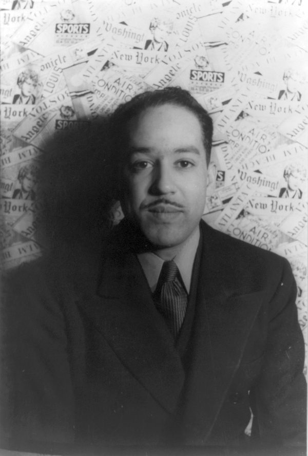
Langston Hughes, “Let America Be America Again” (1935)
The African American poet Langston Hughes wrote this poem in 1935, in the middle of the Depression. It was published in 1936. Two short extracts (the poem is still under copyright):
“Let America be America again.
Let it be the dream it used to be.”
…
“(America never was America to me.)”
Read the full poem on the Academy of American Poets website (short extracts quoted for study)
Guided task. The line in brackets answers the first two lines. Who could say it in 1942, in front of the shop “I AM AN AMERICAN”? Write one sentence beginning: For the owner of this shop, America…
46 years later: an official apology
On 10 August 1988, President Ronald Reagan signed the Civil Liberties Act. In this law, the United States formally apologised for the internment of Japanese Americans and offered $20,000 to each surviving person who had been interned. Photos like Lange’s helped later generations to understand what had happened.
Sources: Ronald Reagan Presidential Library, remarks of 10 August 1988 · Congress.gov, H.R. 442
Linking, /dʒ/ sounds, weak forms and lists
New words:
Write or speak: give a voice to a photo
San Francisco, April 1942. At Raphael Weill Public School, children pledge allegiance to the American flag. Within weeks, the Japanese American children in this line will be forced to leave their homes with their families and sent to camps, although most of them are American citizens. Their classmates will stay.
Who decides which images we are allowed to see? Today, governments, platforms and algorithms all choose what appears on our screens. Can you think of an image that was removed or hidden recently? Who removed it, and why?
En février 1942, après Pearl Harbor, le décret présidentiel 9066 entraîne le déplacement forcé de plus de 110 000 personnes d’origine japonaise, en majorité citoyennes américaines. Dorothea Lange est engagée pour photographier l’opération ; les règles de la War Relocation Authority lui interdisent de montrer les barbelés et les gardes, et une partie des tirages est marquée « impounded » (saisi). Les photos sont retenues pendant la guerre, puis versées sans restriction aux Archives nationales en 1946. En 1988, les États-Unis présentent des excuses officielles. Prononciation : liaisons (I am an American), son /dʒ/, formes faibles, intonation des énumérations.
| Minutes | Déroulement (55 min) |
|---|---|
| 0 → 5 | Bell-ringer affiché avant l’entrée, appel pendant l’écriture. |
| 5 → 9 | Réutilisation : lecture de la légende d’origine ; critique des sources (deux adresses). |
| 9 → 18 | Deux écoutes, exercice chiffré, repérage de l’accent britannique. |
| 18 → 28 | Trois photos : association légende/photo ; vocabulaire officiel et mots exacts ; « Outside the frame ». |
| 28 → 35 | Deux sources, deux récits : accord et désaccord (repris en séance 7). |
| 35 → 41 | Poème de Langston Hughes : lecture et phrase guidée ; encadré 1988. |
| 41 → 47 | Say it right : liaisons, /dʒ/, formes faibles, énumérations. |
| 47 → 55 | Production à trois niveaux, ticket de sortie. |
Moments clés de l’heure
Avant la sonnerie : photo de la boutique projetée et imprimée ; les élèves lisent les trois panneaux dès qu’ils s’assoient.
Transitions : à 18, les trois photos et les légendes sont sur la même fiche : pas de changement de support ; à 28, les deux citations sont déjà affichées côte à côte.
Fin de cours (53 → 55) : personne ne range avant le ticket de sortie ; on le ramasse à la porte, une feuille par élève.
Classe suivante : le bell-ringer de la classe suivante est déjà ouvert dans un autre onglet ; on l’affiche dès que les élèves sortent. L’appel et PRONOTE se font pendant ce bell-ringer ; le dépôt des exercices sur l’ENT attend la pause ou la fin de journée.
Si la technique lâche : transcription lue par vous (la seconde partie par un élève volontaire, pour garder deux voix) ; photos A, B, C sur la fiche ; poème au tableau.
Keeping the room calm · une classe au travail, sans tension
Carte de secours (5 à 10 min, seul, sur papier) : « Choose three words you can read on the photos. For each word, write one sentence: This word shows that… » Quelques exemplaires imprimés restent sur le bureau.
Consignes toujours visibles : la consigne en cours et la suivante restent écrites au tableau ou en bas de l’écran : un élève qui a décroché une minute sait où reprendre sans avoir à demander devant tout le monde.
Recadrer en privé : s’approcher, se mettre à sa hauteur, parler bas. Parler de la tâche, pas de l’élève (« Question 2 : tu peux commencer par la première ligne »). Proposer un choix simple : la tâche de la classe ou la carte de secours.
Placement et rôles : on garde le plan de classe habituel ; une place plus à l’écart peut être proposée comme un choix, jamais comme une punition. Un élève peut tenir le rôle de « caption reader » : il lit les légendes, sans avoir à donner son avis.
Si un élève refuse : pas de bras de fer, pas de remarque devant la classe. On pose la carte de secours sur la table, on note discrètement (nom, minute, ce qui a été proposé) et on continue le cours. Un mot calme en tête-à-tête à la sortie suffit souvent. Certains jours, un élève ne suivra pas : on l’accepte, le cours continue pour les autres.
Sources : National Archives, notices 537833, 537478, 537505, 539961 (légendes d’origine) ; Library of Congress, notice LC-USZ62-23602 « Japanese-American owned grocery store, Oakland, California, March 1942 » (adresse corrigée en 2017, propriétaire identifié : Tatsuro Matsuda) ; The New York Times, Lens, 8 et 23 février 2017 ; National Archives, « Correcting the Record… », Kerri Lawrence, 16 février 2017 ; Getty Museum, « Dorothea Lange’s Milestones » ; Reagan Library et Congress.gov (Civil Liberties Act, 10 août 1988). Le poème de Langston Hughes est encore protégé : on n’en cite que deux courts extraits, à des fins d’étude. Vocabulaire : on explique pourquoi les historiens préfèrent aujourd’hui forced removal et incarceration à evacuation. Sujet sensible : discrimination fondée sur l’origine ; cadre de la charte. Charte du cours →
Dorothea Lange: Grab a Hunk of Lightning
A hunk is a big, thick piece of something. Lightning is the light in the sky during a storm.
- Why would a photographer want to “grab a hunk of lightning”? Write one sentence.
- Think of one moment in your life you would like to “grab” with a camera. Write it in five words.
Entrée en cours. Titre projeté avant l’entrée ; appel pendant l’écriture. Réutilisation (minutes 5 à 8) : trois hypothèses lues à voix haute ; on garde au tableau l’idée d’un instant rapide, puissant, impossible à reproduire. La vraie origine du titre arrive avec l’écoute.
Lesson 5 · Watching a documentary
The film: Grab a Hunk of Lightning (2014)
About the film
→ A documentary of 110 minutes, from the PBS series American Masters, first broadcast on 29 August 2014.
→ Directed and narrated by Dyanna Taylor, Lange’s granddaughter, an award-winning cinematographer.
→ Made from journals, letters, family memories, archive footage and interviews, after years of research.
→ It includes rare footage of Lange in her last years, preparing her exhibition at the Museum of Modern Art in New York, which opened in 1966, after her death.
Sources: official film website · PBS, American Masters
Where does the title come from?
Computer voice: Michael (American English).
Transcript (only after the two listenings)
Dorothea Lange: Grab a Hunk of Lightning is a documentary from the American television series American Masters, on PBS. It was first broadcast on the twenty-ninth of August 2014. It was directed and narrated by Dyanna Taylor, Lange’s granddaughter, an award-winning cinematographer. The film lasts about one hour and fifty minutes. It follows five decades of Lange’s work, from the Great Depression and the Dust Bowl to the camps of the Second World War. It also shows how hard it was for her to balance her work and her family. The title comes from Lange herself. In 1933, she set herself a challenge: to photograph something in the street, develop it, print it and put it on the wall, all in twenty-four hours, to see if she could just grab a hunk of lightning.
Check your understanding
“I will set myself a big problem (…) all in twenty-four hours. I will do this, to see if I can just grab a hunk of lightning.”
Dorothea Lange, quoted by Elizabeth Partridge in a book excerpt published by PBS American Masters
“You have to annihilate yourself, so you can become a vessel (…) to see what is really there.”
Dorothea Lange, quoted on the official film website
When Dyanna Taylor was ten, she showed her grandmother a few rocks and shells: “Look Grandma, look at these!” Lange answered: “Yes, I see them, but do YOU see them?” and she took a photo of the shells in the child’s hand.
Years later, Taylor wrote: “These days, everyone has a camera. What are we really seeing?”
Dyanna Taylor, director’s statement, official film website
Watching guide: use it with the trailer, or with the full film if your teacher shows it
| Look and listen for… | Your notes |
|---|---|
| Three photos you recognise from lessons 1 to 4 | |
| Two places and two dates | |
| Who speaks? (Lange herself, the narrator, other people) | |
| The music: what mood does it create? | |
| One sentence you understood word for word | |
| A documentary is not neutral: one choice the director made |
Useful language: The film opens with… · We can hear… · The narrator explains that… · The music makes the scene… · The director chose to show… in order to…
Even a good film can repeat a myth
The official website of the film says that Lange’s photos of Japanese Americans were “impounded for half a century”. In lesson 4, you read what the National Archives wrote in 2017. Is the sentence accurate? Rewrite it so that it is true.
Say Lange’s words like an actor
Repeating a phrase (Look at it. Look at it.) is a way of insisting: say the second one more slowly and more quietly, as if you were thinking aloud.
Drama: Lange speaks
Good evening. Dorothea Lange was my grandmother. When I was ten, I showed her some shells, and she asked me whether I really saw them. I have never forgotten that question. In this film, I wanted people to discover the whole range of her work, not only Migrant Mother, and to understand how she looked at the world.
Lange set herself a challenge of twenty-four hours. Set yourself one for this week: one photo, one caption, one person you really look at. What would your “hunk of lightning” be?
Dorothea Lange: Grab a Hunk of Lightning (PBS, American Masters, 2014, 110 min) est réalisé et raconté par Dyanna Taylor, petite-fille de la photographe. Le titre vient d’un défi de 1933 : photographier, développer, tirer et accrocher une image en vingt-quatre heures, « pour voir si je peux attraper un morceau de foudre ». Le site du film reprend pourtant une erreur (photos « saisies pendant un demi-siècle ») : un document qu’on apprécie se vérifie aussi.
| Minutes | Déroulement (55 min) |
|---|---|
| 0 → 5 | Bell-ringer affiché avant l’entrée, appel pendant l’écriture. |
| 5 → 8 | Réutilisation : hypothèses sur le titre. |
| 8 → 16 | Fiche du film, bande-annonce (3 min 33) visionnée deux fois avec la grille. |
| 16 → 24 | Écoute, quiz, citations de Lange et souvenir de Dyanna Taylor. |
| 24 → 30 | « Stay critical » : correction de la phrase du site du film. |
| 30 → 36 | Say it right : dire les phrases de Lange comme un acteur. |
| 36 → 53 | Drama : préparation en binômes, puis trois passages. |
| 53 → 55 | Ticket de sortie : « my hunk of lightning ». |
Moments clés de l’heure
Avant la sonnerie : le titre et les deux définitions au tableau ou sur papier : aucune technique nécessaire pour démarrer.
Transitions : la grille de visionnage est distribuée avant la bande-annonce, jamais pendant ; à 36, les binômes de théâtre sont formés à l’avance (liste au tableau).
Fin de cours (53 → 55) : personne ne range avant le ticket de sortie ; on le ramasse à la porte, une feuille par élève. Trois passages au maximum : les autres jouent la semaine suivante en début d’heure, après le bell-ringer.
Classe suivante : le bell-ringer de la classe suivante est déjà ouvert dans un autre onglet ; on l’affiche dès que les élèves sortent. L’appel et PRONOTE se font pendant ce bell-ringer ; le dépôt des exercices sur l’ENT attend la pause ou la fin de journée.
Si la technique lâche : sans vidéo, on travaille la fiche du film, les citations et la transcription lue par vous ; la grille de visionnage est reportée à la séance suivante.
Keeping the room calm · une classe au travail, sans tension
Carte de secours (5 à 10 min, seul, sur papier) : « Read the film sheet. Copy two facts about the film and one quote you like. Then write: I chose this quote because… » Quelques exemplaires imprimés restent sur le bureau.
Consignes toujours visibles : la consigne en cours et la suivante restent écrites au tableau ou en bas de l’écran : un élève qui a décroché une minute sait où reprendre sans avoir à demander devant tout le monde.
Recadrer en privé : s’approcher, se mettre à sa hauteur, parler bas. Parler de la tâche, pas de l’élève (« Question 2 : tu peux commencer par la première ligne »). Proposer un choix simple : la tâche de la classe ou la carte de secours.
Placement et rôles : on garde le plan de classe habituel ; une place plus à l’écart peut être proposée comme un choix, jamais comme une punition. Un élève qui ne veut pas jouer la scène peut être « director » : il lit les indications et dit « Action! ». Personne n’est obligé de passer devant la classe.
Si un élève refuse : pas de bras de fer, pas de remarque devant la classe. On pose la carte de secours sur la table, on note discrètement (nom, minute, ce qui a été proposé) et on continue le cours. Un mot calme en tête-à-tête à la sortie suffit souvent. Certains jours, un élève ne suivra pas : on l’accepte, le cours continue pour les autres.
Droits et disponibilité (vérifiés en octobre 2026). Le film complet n’est plus mis en ligne par PBS (fin de la mise en ligne en mars 2018). La bande-annonce Vimeo de Katahdin Productions est intégrable ; l’aperçu PBS peut être bloqué hors des États-Unis. Le DVD est vendu sur le site du film : si l’établissement le possède, on peut projeter le film en entier (1 h 50, hors volume horaire de base) avec la même grille. Aucune tâche de cette page ne suppose d’avoir vu le film complet. Sources : site officiel du film (durée, réalisatrice, citations, déclaration de la réalisatrice) ; PBS American Masters (diffusion du 29 août 2014, aperçu, extrait du livre d’Elizabeth Partridge) ; National Archives, « Correcting the Record… » (2017). Charte du cours →
Copy these four words. Underline the stressed syllable in each one. Do not use your phone: trust your ear.
photograph · photographer · photography · photographic
Then say them quietly to yourself. Is the stress always in the same place?
Entrée en cours. Cadre projeté avant l’entrée ; appel pendant l’écriture. Réutilisation (minutes 5 à 9) : on écoute les quatre mots (bloc 1) ; les élèves corrigent eux-mêmes. On garde au tableau la règle de l’accent qui « saute » : PHO-to-graph · pho-TO-grapher · pho-TO-graphy · pho-to-GRA-phic. Les élèves gardent leur première version : ils la compareront au retest de fin de séance.
Lesson 6 · Pronunciation lab
Pronunciation lab: sound like a museum guide
In your final task, you will record an audio guide. A good guide is easy to follow: clear word stress, linked words, and a voice that goes down at the end of each piece of information. This lab trains exactly that, with the words of our learning journey. Listen, repeat, record yourself, compare.
The jumping stress: photo-
| Word | Stress | Listen |
|---|---|---|
| photograph | ● ○ ○ | |
| photographer | ○ ● ○ ○ | |
| photography | ○ ● ○ ○ | |
| photographic | ○ ○ ● ○ |
Two rules that help: in words ending in -tion and -ic, the stress falls on the syllable just before the ending.
More words:
Find the stressed syllable
-ate: adjective or verb?
When -ate ends an adjective, it is weak: /ət/. When it ends a verb, it is strong: /eɪt/. Listen to separate: the verb and the adjective do not sound the same.
Words that hold hands
When a word ends with a consonant and the next one starts with a vowel, English speakers link them: I‿am‿an‿American sounds like one long word.
Mark the links in these sentences, then say them: Look at it. · Five exposures, closer and closer. · She took a picture of a mother in a tent.
Captions fall, questions can rise
Three challenges
Say each tongue-twister three times: slowly, normally, then fast. Use the slow button first.
Pair coach: record, listen, give one tip
Work in pairs. Read this caption aloud and record it on your phone (or the ENT). Your partner listens with the grid, then gives you one tip. Swap roles.
Destitute pea pickers in California. Mother of seven children. Age thirty-two. Nipomo, California. March 1936. Photograph by Dorothea Lange.
| My partner… | Yes | Not yet |
|---|---|---|
| stresses California, photograph and Dorothea correctly | ||
| makes a short pause after each block | ||
| lets the voice fall at the end of each block | ||
| says /θ/ in thirty (not /s/, not /t/) | ||
| speaks slowly enough for a visitor |
Compare with the model:
Look again at your bell-ringer. Correct it if you need to, then say the four words to your partner. Who improved? Write one thing you will practise at home: I need to work on…
Your voice is part of your identity. Improving your pronunciation is not about sounding American or British: it is about being understood easily, everywhere in the world.
Laboratoire de prononciation pour préparer l’audioguide final : accent de mot (famille photo-, règles des suffixes -tion et -ic), -ate faible dans les adjectifs et fort dans les verbes (separate), liaisons, intonation descendante des légendes et des questions ouvertes, montante des questions fermées, emphase. Travail en binômes avec enregistrement et grille d’écoute.
| Minutes | Déroulement (55 min) |
|---|---|
| 0 → 5 | Bell-ringer affiché avant l’entrée, appel pendant l’écriture. |
| 5 → 9 | Réutilisation : écoute des quatre mots, autocorrection, règle au tableau. |
| 9 → 18 | Bloc 1 : accent de mot, quiz. |
| 18 → 24 | Bloc 2 : -ate, quiz. |
| 24 → 29 | Bloc 3 : liaisons. |
| 29 → 36 | Bloc 4 : intonation et emphase, quiz. |
| 36 → 41 | Bloc 5 : virelangues (lent, normal, rapide). |
| 41 → 52 | Pair coach : enregistrement sur téléphone ou ENT, grille, un conseil, inversion des rôles. |
| 52 → 55 | Retest et objectif personnel. |
Moments clés de l’heure
Avant la sonnerie : les quatre mots au tableau ou sur papier ; consigne : écrire sans téléphone.
Transitions : chaque bloc s’enchaîne sur le même schéma (écouter, répéter en chœur, quiz) : les élèves savent ce qui vient ; à 41, les binômes et l’ordre de passage sont déjà affichés.
Fin de cours (53 → 55) : retest à voix basse en binôme, puis une phrase « I need to work on… » sur le ticket ; personne ne range avant.
Classe suivante : le bell-ringer de la classe suivante est déjà ouvert dans un autre onglet ; on l’affiche dès que les élèves sortent. L’appel et PRONOTE se font pendant ce bell-ringer ; le dépôt des exercices sur l’ENT attend la pause ou la fin de journée.
Si la technique lâche : vous servez de modèle (lent, puis normal) ; l’enregistrement se fait sans téléphone, en lecture au binôme avec la grille.
Keeping the room calm · une classe au travail, sans tension
Carte de secours (5 à 10 min, seul, sur papier) : « Copy the four words. Underline the stressed syllable. Then whisper each word three times. » Quelques exemplaires imprimés restent sur le bureau.
Consignes toujours visibles : la consigne en cours et la suivante restent écrites au tableau ou en bas de l’écran : un élève qui a décroché une minute sait où reprendre sans avoir à demander devant tout le monde.
Recadrer en privé : s’approcher, se mettre à sa hauteur, parler bas. Parler de la tâche, pas de l’élève (« Question 2 : tu peux commencer par la première ligne »). Proposer un choix simple : la tâche de la classe ou la carte de secours.
Placement et rôles : on garde le plan de classe habituel ; une place plus à l’écart peut être proposée comme un choix, jamais comme une punition. Un élève qui ne veut pas parler à voix haute peut murmurer à son binôme ou à vous seulement, ou montrer l’accent tonique sur papier. Pas de passage forcé devant la classe.
Si un élève refuse : pas de bras de fer, pas de remarque devant la classe. On pose la carte de secours sur la table, on note discrètement (nom, minute, ce qui a été proposé) et on continue le cours. Un mot calme en tête-à-tête à la sortie suffit souvent. Certains jours, un élève ne suivra pas : on l’accepte, le cours continue pour les autres.
Les modèles sont des voix de synthèse Kokoro (fichiers mp3 générés pour ce parcours, voix américaines sauf mention « British voice »). Elles ont été vérifiées à l’écoute et par reconnaissance automatique ; les noms propres ont été corrigés phonétiquement (Lange /læŋ/, Dorothea, Manzanar, Mochida). Repères du BO (Première) : accent de mot, formes faibles, intonation, liaisons. Si un élève ne peut pas s’enregistrer, il lit à son binôme sans enregistrement : la grille marche de la même façon. Charte du cours →
Here are three real headlines. For each one, write T if you think it gives a fact, O if it suggests an opinion or a strong angle.
- “Rarely Seen Photos of Japanese Internment”
- “Correcting the Record on Dorothea Lange’s Japanese Internment Photos”
- “That Iconic ‘Migrant Mother’ Photo Was ‘Photoshopped’”
Why are there inverted commas around Photoshopped in headline 3?
Entrée en cours. Cadre projeté avant l’entrée ; appel pendant l’écriture. Réutilisation (minutes 5 à 9) : vote à main levée ; pas de bonne réponse unique : le titre 1 est factuel en apparence mais affirme que les photos ont été « rarement vues », ce que les Archives contestent (titre 2). Les guillemets du titre 3 signalent un anachronisme assumé : Photoshop n’existait pas en 1939.
Lesson 7 · Three lessons: the press, the passive, the debate
Read the news: when the record needs correcting
Photos travel with words: captions, headlines, articles. In February 2017, two respected institutions told two different stories about the same photos. In this lesson, you will read them like a journalist, learn the grammar of archives and captions, then hold a debate.
Lesson 1 · The press
A media story in two parts
Computer voices: George, then Emma (British English).
Transcript (only after the two listenings)
Here is a summary of a media story from February 2017, written for this learning journey. On the eighth of February, a photography blog of The New York Times published an article about Dorothea Lange’s photographs of Japanese American internment. The article said that, after the war, the photographs had remained largely unseen and unpublished for decades.
Eight days later, the National Archives replied with an article called Correcting the Record. An archivist explained that the photos had been among the most frequently requested in the collection, and that the idea of a hidden treasure came from a newspaper article published in 2006. Both sources agree on one point: during the war, the government withheld the photographs. They disagree about what happened next.
Who said what?
“Rarely Seen Photos of Japanese Internment”, The New York Times, Lens, 8 February 2017
| Part | In this article | Its job |
|---|---|---|
| Headline | “Rarely Seen Photos of Japanese Internment” | catch the eye, sum up the angle |
| Byline | Maurice Berger | who wrote it: a responsibility |
| Lead | Lange’s photos “document something sinister”: the internment of “more than 110,000 people of Japanese ancestry (…), more than 60 percent of whom were American citizens.” | the essential facts first |
| Quotation | the historian Linda Gordon, in the 2006 book Impounded | an expert voice to support the story |
| Context | prints “defaced by military personnel, the word ‘impounded’ scrawled across them” | explain why it matters |
| Today | “Ms. Lange’s photographs remain as relevant as ever.” | link the past with the present: an opinion |
Read the article (The New York Times, Lens blog) · Read the National Archives’ reply
Fact, opinion, or claim to check?
Headlinese: the special grammar of headlines
Headlines drop small words (the, a, is, are), use the present simple for the past, and use short, strong words. Listen to six real headlines and say them with the same rhythm.
Rewrite as normal sentences
Five questions for any photo you see online
→ Who published it first? (photographer, agency, archive, anonymous account)
→ When and where was it taken? Is there an original caption?
→ What do other sources say? Search for the headline, or use a reverse image search.
→ Has it been changed? Cropped, retouched, generated?
→ Who benefits if I share it?
Apply the five questions to the story of the “hidden photos”: which question would have stopped the myth?
Leçon 1 (55 min). 0 → 5 bell-ringer ; 5 → 9 réutilisation ; 9 → 18 écoute et quiz ; 18 → 28 anatomie de l’article (lecture guidée, éventuellement de l’article en ligne) ; 28 → 35 fait, opinion, affirmation à vérifier ; 35 → 45 titres : écoute, rythme, réécriture ; 45 → 53 « Check before you share » ; 53 → 55 ticket de sortie : une question sur cinq, à appliquer à une image vue cette semaine. Sources : The New York Times, Lens, 8 février 2017 (Maurice Berger) ; National Archives, 16 février 2017 (Kerri Lawrence, citations de l’archiviste Nicholas Natanson) ; The New York Times, 6 novembre 2006 ; KQED, 10 mai 2017 ; PetaPixel, 30 novembre 2018 ; AP News, 11 mars 2024. Le texte de l’écoute est un résumé rédigé pour ce parcours, ce que dit l’enregistrement lui-même.
Moments clés de l’heure
Avant la sonnerie : les trois titres au tableau ou sur papier.
Transitions : à 18, le tableau « anatomy » est sur la fiche, déjà ouvert ; à 35, on écoute les titres sans transition, la réécriture est sous les yeux.
Fin de cours (53 → 55) : personne ne range avant le ticket de sortie ; on le ramasse à la porte, une feuille par élève.
Classe suivante : le bell-ringer de la classe suivante est déjà ouvert dans un autre onglet ; on l’affiche dès que les élèves sortent. L’appel et PRONOTE se font pendant ce bell-ringer ; le dépôt des exercices sur l’ENT attend la pause ou la fin de journée.
Si la technique lâche : transcription et titres lus par vous ; l’article en ligne n’est pas indispensable, le tableau en donne l’essentiel.
Keeping the room calm · une classe au travail, sans tension
Carte de secours (5 à 10 min, seul, sur papier) : « Choose one headline. Rewrite it as a full sentence: Who did what? » Quelques exemplaires imprimés restent sur le bureau.
Consignes toujours visibles : la consigne en cours et la suivante restent écrites au tableau ou en bas de l’écran : un élève qui a décroché une minute sait où reprendre sans avoir à demander devant tout le monde.
Recadrer en privé : s’approcher, se mettre à sa hauteur, parler bas. Parler de la tâche, pas de l’élève (« Question 2 : tu peux commencer par la première ligne »). Proposer un choix simple : la tâche de la classe ou la carte de secours.
Placement et rôles : on garde le plan de classe habituel ; une place plus à l’écart peut être proposée comme un choix, jamais comme une punition. Rôle possible : « headline hunter », qui lit les titres à voix haute.
Si un élève refuse : pas de bras de fer, pas de remarque devant la classe. On pose la carte de secours sur la table, on note discrètement (nom, minute, ce qui a été proposé) et on continue le cours. Un mot calme en tête-à-tête à la sortie suffit souvent. Certains jours, un élève ne suivra pas : on l’accepte, le cours continue pour les autres.
Lesson 2 · Grammar focus: the passive
Compare the two sentences. Copy them, then answer the questions.
A. Lange’s assistant removed the thumb in 1939.
B. The thumb was removed in 1939.
- In which sentence do we know who did the action?
- Underline the verb in each sentence.
- Why would an archive caption prefer sentence B?
Entrée en cours. Cadre projeté avant l’entrée ; appel pendant l’écriture. Réutilisation (minutes 5 à 9) : removed / was removed au tableau ; on fait formuler la règle par les élèves (be + participe passé) et l’effet (l’action compte plus que l’agent, ou l’agent est caché). Lien avec la séance 3 et avec la question du pouvoir : qui agit, qui disparaît de la phrase ?
Step 1 · The form: be + past participle
The passive puts the object of the action first. The verb be carries the tense; the past participle carries the meaning.
| Tense | Active | Passive |
|---|---|---|
| Present simple | The museum shows the photo. | The photo is shown in the museum. |
| Preterite | Lange took the photo in 1936. | The photo was taken in 1936. |
| Present perfect | Millions of people have seen it. | It has been seen by millions of people. |
| Past perfect | The army had marked some prints. | Some prints had been marked “impounded”. |
| Modal | We should not change a documentary photo. | A documentary photo should not be changed. |
| Going to / will | The class will display the captions. | The captions will be displayed. |
Step 2 · Why use the passive? Three reasons, and a warning
→ We do not know which soldier wrote it.
→ What matters is the photo.
→ Who forced them? The government. The passive can hide responsibility.
The by-agent. Add by + agent only when it brings information: The photo was taken by Dorothea Lange. (useful) · The photo was taken by someone. (useless)
Have something done. To say that you asked someone else to do something: Lange had the thumb removed. = She asked an assistant to remove it. I had my photo printed.
| Wrong | Right | Why |
|---|---|---|
| The photo | The photo was taken in 1936. | past participle, not base verb |
| The photo | The photo was taken in 1936. | do not forget be (except in captions and headlines) |
| The prints | The prints were marked. | be agrees with the subject |
| She | She was born in 1895. | be born: always in the past for a birth |
| The thumb was removed | The thumb was removed by her assistant. | the agent is introduced by by |
Level 1 · Choose the right form
Level 2 · Complete with the passive
Level 3 · Transform, and decide about the agent
Reuse it: the passive in your caption
Write the caption of one photo of this learning journey in three sentences, with at least two passives. Use was taken, was published, was withheld, was removed, is kept.
Leçon 2 (55 min). 0 → 5 bell-ringer ; 5 → 9 réutilisation (règle formulée par les élèves) ; 9 → 20 étape 1 (forme, écoute des six phrases, formes faibles was, were, been) ; 20 → 28 étape 2 (pourquoi le passif, by, have something done) et erreurs fréquentes ; 28 → 45 exercices à trois niveaux (fiche à trous ou document à compléter, papier ou ENT) ; 45 → 53 réemploi dans une légende ; 53 → 55 ticket de sortie. Repères du BO de Première : le passif et la forme causative figurent parmi les repères grammaticaux. Choix du passif pour ce parcours : c’est la grammaire des légendes et des archives, et celle du pouvoir qui efface l’agent (families were evacuated).
Moments clés de l’heure
Avant la sonnerie : les phrases A et B au tableau.
Transitions : les trois niveaux d’exercices sont sur la même fiche à trous ou le même document à compléter (papier ou ENT) : chacun avance sans attendre ; les corrigés sont projetés niveau par niveau.
Fin de cours (53 → 55) : personne ne range avant le ticket de sortie ; on le ramasse à la porte, une feuille par élève. Le ticket : une phrase au passif sur la photo de son choix.
Classe suivante : le bell-ringer de la classe suivante est déjà ouvert dans un autre onglet ; on l’affiche dès que les élèves sortent. L’appel et PRONOTE se font pendant ce bell-ringer ; le dépôt des exercices sur l’ENT attend la pause ou la fin de journée.
Si la technique lâche : les six phrases modèles sont dites par vous ; tout le reste fonctionne sur papier.
Keeping the room calm · une classe au travail, sans tension
Carte de secours (5 à 10 min, seul, sur papier) : « Do the first five gaps of level 1 only. Then check with the key and correct in another colour. » Quelques exemplaires imprimés restent sur le bureau.
Consignes toujours visibles : la consigne en cours et la suivante restent écrites au tableau ou en bas de l’écran : un élève qui a décroché une minute sait où reprendre sans avoir à demander devant tout le monde.
Recadrer en privé : s’approcher, se mettre à sa hauteur, parler bas. Parler de la tâche, pas de l’élève (« Question 2 : tu peux commencer par la première ligne »). Proposer un choix simple : la tâche de la classe ou la carte de secours.
Placement et rôles : on garde le plan de classe habituel ; une place plus à l’écart peut être proposée comme un choix, jamais comme une punition. Rôle possible : vérificateur, qui compare avec le corrigé projeté. Les trois niveaux évitent qu’un élève reste bloqué ou s’ennuie.
Si un élève refuse : pas de bras de fer, pas de remarque devant la classe. On pose la carte de secours sur la table, on note discrètement (nom, minute, ce qui a été proposé) et on continue le cours. Un mot calme en tête-à-tête à la sortie suffit souvent. Certains jours, un élève ne suivra pas : on l’accepte, le cours continue pour les autres.
Lesson 3 · The debate
A museum is preparing an exhibition. It can show only one version of Migrant Mother: the original print with the thumb (A), or the famous retouched version (B).
Write your choice and one reason: I would show version… because…
Entrée en cours. Cadre projeté avant l’entrée ; appel pendant l’écriture. Réutilisation (minutes 5 à 8) : vote ; on note les raisons au tableau en deux colonnes. Elles serviront aux rôles.
A public meeting at the museum
A museum in California is planning an exhibition called Through the Lens. The curators must decide: which version of Migrant Mother will be shown, and what will the label say about Florence Owens Thompson? The meeting is open to the public. Each speaker has one minute, then there is an open discussion. At the end, the chair sums up and the room votes.
| Role | Point of view (you can add your own arguments) |
|---|---|
| The chair | gives the floor, keeps time, asks questions, sums up, organises the vote. |
| The curator | wants to show the original print with the thumb: an archive must tell the whole truth, including how the photo was changed. |
| A grandchild of Florence Owens Thompson | wants the label to give her name, her story and her words of 1978; asks who has made money from her image. |
| A photojournalist | explains the rules of today: no removing, no adding; compares with the 2024 royal photo and with AI images. |
| A historian | explains the context of 1936 and 1939: retouching portraits was common, and Lange believed her pictures might help the family; warns against judging the past with today’s rules. |
| A visitor | wants to see the famous image everyone knows, but also wants to understand it; proposes a solution. |
Prepare: use the passive to be precise
After the debate: write the decision
In 60 to 100 words, write the museum’s decision and the label for Migrant Mother. Use at least two passives and one concession (Although…, Even if…).
In a debate, the goal is not to win at any price. It is to understand why others think differently, and sometimes to change your mind. Did anyone change your mind today?
Lesson en trois leçons. Presse : deux sources sérieuses, The New York Times et les Archives nationales, racontent différemment le sort des photos de 1942 ; on distingue fait, opinion et affirmation à vérifier, et on étudie la langue des titres. Grammaire : le passif (be + participe passé), l’agent introduit par by, la forme causative have something done ; le passif peut cacher qui agit. Débat : un musée doit choisir quelle version de Migrant Mother exposer et que dire de Florence Owens Thompson.
Leçon 3 (55 min). 0 → 5 bell-ringer ; 5 → 8 réutilisation ; 8 → 20 rôles distribués, préparation en groupes (une fiche d’arguments par rôle, papier ou ENT) ; 20 → 42 débat (prises de parole d’une minute, puis discussion libre, vote) ; 42 → 53 décision écrite ; 53 → 55 ticket de sortie. Évaluation possible de la prise de parole en interaction avec la grille de la page Final task. Points de vigilance : on ne met pas en scène la souffrance de la famille ; le rôle du petit-enfant s’appuie seulement sur les faits vérifiés (citation de 1978, épitaphe). Charte du cours →
Moments clés de l’heure
Avant la sonnerie : la question du vote au tableau.
Transitions : les rôles sont distribués sur papier dès 8 minutes, avec la fiche d’arguments ; un minuteur visible pour chaque prise de parole d’une minute.
Fin de cours (53 → 55) : le vote est fait avant 50 ; la décision écrite peut se terminer à la maison ; personne ne range avant le ticket de sortie ; on le ramasse à la porte, une feuille par élève.
Classe suivante : le bell-ringer de la classe suivante est déjà ouvert dans un autre onglet ; on l’affiche dès que les élèves sortent. L’appel et PRONOTE se font pendant ce bell-ringer ; le dépôt des exercices sur l’ENT attend la pause ou la fin de journée.
Si la technique lâche : aucune technique nécessaire : rôles, phrases et grille sont sur papier.
Keeping the room calm · une classe au travail, sans tension
Carte de secours (5 à 10 min, seul, sur papier) : « Write one argument for and one argument against on a card. The teacher can read your card to the class. » Quelques exemplaires imprimés restent sur le bureau.
Consignes toujours visibles : la consigne en cours et la suivante restent écrites au tableau ou en bas de l’écran : un élève qui a décroché une minute sait où reprendre sans avoir à demander devant tout le monde.
Recadrer en privé : s’approcher, se mettre à sa hauteur, parler bas. Parler de la tâche, pas de l’élève (« Question 2 : tu peux commencer par la première ligne »). Proposer un choix simple : la tâche de la classe ou la carte de secours.
Placement et rôles : on garde le plan de classe habituel ; une place plus à l’écart peut être proposée comme un choix, jamais comme une punition. Un élève qui ne veut pas prendre la parole peut être gardien du temps, compteur des votes ou secrétaire du débat : il participe sans parler devant tous.
Si un élève refuse : pas de bras de fer, pas de remarque devant la classe. On pose la carte de secours sur la table, on note discrètement (nom, minute, ce qui a été proposé) et on continue le cours. Un mot calme en tête-à-tête à la sortie suffit souvent. Certains jours, un élève ne suivra pas : on l’accepte, le cours continue pour les autres.
Look back at the photos of this learning journey. Choose the one you would like to present to visitors. Write:
- its title, place and date;
- three words to describe it;
- one sentence: I chose this photo because…
Entrée en cours. Cadre projeté avant l’entrée ; appel pendant l’écriture. Réutilisation (minutes 5 à 10) : tour de classe rapide des choix ; on évite que tous prennent Migrant Mother en proposant d’équilibrer les photos (une photo peut être présentée par deux élèves au maximum). Les élèves peuvent aussi choisir une autre photo de Lange dans les collections publiques de la Library of Congress ou des National Archives, avec la légende d’origine.
Lesson 8 · Final task
Final task: our exhibition Through the Lens
Our class becomes a team of curators. Together, we will create a small exhibition of Dorothea Lange’s photographs, on the walls of the classroom or the school hall, or on the ENT. Each of you is responsible for one photo: you write its label and record its audio guide, then you present it to visitors and answer their questions.
Four steps
1. The caption (20 to 40 words) → title, place, date, photographer, what we see. Use the original caption as a source, and correct its words when they hide the truth (lesson 4).
2. The curator’s text (80 to 150 words) → the context, one fact about the people in the photo, what the photo says about power, and why it matters today. At least two passives (lesson 7).
3. The audio guide (1 to 2 minutes) → record it on your phone or the ENT, from notes and keywords. Speak to the visitor: You are standing in front of… · Look at…
4. The oral presentation → present your photo without reading (up to 5 minutes), then answer the visitors’ questions (up to 5 minutes).
Listen to a model audio guide
Computer voice: Heart (American English). About one minute: yours can be a little longer.
Transcript
Welcome to our exhibition, Through the Lens. You are standing in front of a photograph taken by Dorothea Lange on the eighth of May 1942, in Hayward, California. A family is waiting for a bus. The father is wearing a hat, glasses and a leather jacket. Six children are standing in front of the adults, in their winter coats. Look at the paper tags on their coats: they were used to keep each family together during the removal. The original caption tells us that Mr Mochida ran a plant nursery with five greenhouses, where he grew snapdragons and sweet peas. A few weeks before, this family had a business and a home. Now they are waiting, with only what they can carry. What strikes me most is the youngest girl’s face. She is not crying. She is simply waiting. That is what Lange does best: she shows injustice without shouting. Thank you for listening.
Analyse the model
Before you record: prepare your notes
Do not write your audio guide word for word. Write keywords on a card, in five boxes: welcome · facts · look at · context · my reaction. Mark the stressed syllables of the long words (lesson 6), draw ↘ at the end of each piece of information, and link the words that hold hands.
Only use facts you can source: the original caption, the Library of Congress, the National Archives, or a text from this learning journey. If you are not sure, say so: According to the original caption…
Assessment grid (out of 20)
| Criterion | Points |
|---|---|
| Content: accurate and sourced facts; description of the photo; link with power and with today | 5 |
| Organisation: welcome, facts, description, context, reaction; connectors | 3 |
| Language: passives, past tenses, vocabulary of photography and of the programme | 4 |
| Pronunciation: word stress, falling tone on captions, linking, clear sounds | 4 |
| Interaction: understands the visitors’ questions, answers with details, reformulates | 4 |
The written label and the audio guide can be assessed with the same criteria (interaction excepted).
Voie générale et technologique
This task trains you to speak in continuous speech and in interaction about a cultural object, with arguments and examples, as expected in Première. The reference level is B1, consolidated and passed; the target at the end of Terminale is B2 for LVA and B1 for LVB.
Voie professionnelle
This task trains you for situation B of the bac pro exam: 10 minutes, up to 5 minutes of continuous speech, then up to 5 minutes of interaction. You must not read a text written word for word: speak from your notes. The target levels are B2 for LVA and B1 for LVB.
One single task for everyone: the same photo, the same label, the same audio guide, the same grid.
Final quiz
Lange wanted people to look, really look. After this learning journey, which photo will you remember, and what will you look at differently?
Tâche finale : la classe monte une exposition, Through the Lens. Chaque élève choisit une photographie de Dorothea Lange, rédige sa légende (20 à 40 mots) et un texte de commissaire (80 à 150 mots, au moins deux passifs), enregistre un audioguide de 1 à 2 minutes à partir de notes, puis présente sa photo sans lire (5 minutes maximum) avant de répondre aux questions des visiteurs (5 minutes maximum). En voie professionnelle, c’est l’entraînement à la situation B de l’épreuve ; en voie générale et technologique, à la prise de parole en continu et en interaction attendue en première.
| Minutes | Déroulement (2 × 55 min, puis présentations) |
|---|---|
| Séance 1 · 0 → 10 | Bell-ringer et réutilisation (choix des photos). |
| 10 → 25 | Écoute et analyse du modèle ; boîte à outils ; répétition des deux phrases modèles. |
| 25 → 55 | Recherche dans les légendes d’origine ; rédaction de la légende et du texte de commissaire (papier ou ENT). |
| Séance 2 · 0 → 5 | Bell-ringer : relire son texte et entourer deux passifs pendant l’appel. |
| 5 → 30 | Relecture par un pair avec la grille ; carte de mots-clés en cinq cases. |
| 30 → 55 | Enregistrement des audioguides (couloir, CDI, ou à la maison) ; accrochage des légendes ; quiz final. |
| Présentations | Bell-ringer : relire ses mots-clés et s’entraîner à voix basse pendant l’appel (5 min). Puis une « visite » de l’exposition (une heure) : par petits groupes, chaque élève présente sa photo à des visiteurs successifs, pendant que le professeur évalue à tour de rôle. Les passages individuels de 10 minutes (5 + 5, format de la situation B) peuvent être répartis sur d’autres heures d’oral. |
Moments clés de l’heure
Avant la sonnerie : consigne du bell-ringer affichée et liste des photos possibles sur papier.
Transitions : les étapes 1 à 4 sont écrites au tableau dès le début ; un élève qui finit une étape passe seul à la suivante, sans attendre le groupe ; les élèves qui ont tout fini relisent un camarade avec la grille.
Fin de cours (53 → 55) : chaque élève note où il en est (étape 1, 2, 3 ou 4) sur le ticket : cela organise la séance suivante.
Classe suivante : le bell-ringer de la classe suivante est déjà ouvert dans un autre onglet ; on l’affiche dès que les élèves sortent. L’appel et PRONOTE se font pendant ce bell-ringer ; le dépôt des exercices sur l’ENT attend la pause ou la fin de journée. Pendant les présentations, l’ordre de passage est affiché dès l’entrée pour éviter les négociations.
Si la technique lâche : sans enregistrement, l’audioguide est dit en direct à un camarade ; sans écran, les photos sont imprimées et affichées au mur.
Keeping the room calm · une classe au travail, sans tension
Carte de secours (5 à 10 min, seul, sur papier) : « Write your caption only: a title, a date, and one sentence about what we see. » Quelques exemplaires imprimés restent sur le bureau.
Consignes toujours visibles : la consigne en cours et la suivante restent écrites au tableau ou en bas de l’écran : un élève qui a décroché une minute sait où reprendre sans avoir à demander devant tout le monde.
Recadrer en privé : s’approcher, se mettre à sa hauteur, parler bas. Parler de la tâche, pas de l’élève (« Question 2 : tu peux commencer par la première ligne »). Proposer un choix simple : la tâche de la classe ou la carte de secours.
Placement et rôles : on garde le plan de classe habituel ; une place plus à l’écart peut être proposée comme un choix, jamais comme une punition. Les élèves qui ont fini relisent un camarade avec la grille. Pendant les présentations, l’ordre de passage est affiché ; un élève très inquiet peut passer en petit groupe ou devant vous seul, si le cadre de l’évaluation le permet.
Si un élève refuse : pas de bras de fer, pas de remarque devant la classe. On pose la carte de secours sur la table, on note discrètement (nom, minute, ce qui a été proposé) et on continue le cours. Un mot calme en tête-à-tête à la sortie suffit souvent. Certains jours, un élève ne suivra pas : on l’accepte, le cours continue pour les autres.
Références d’épreuve : voie professionnelle, arrêté du 17 juin 2020 (annexe V, BO n° 30 du 23 juillet 2020), situation B, 10 minutes, deux parties de 5 minutes maximum, sans lecture d’un texte rédigé in extenso. Voie générale et technologique : niveaux du BO n° 22 du 29 mai 2025 (consolidation et dépassement du B1 en première ; B2 en LVA et B1 en LVB en fin de cycle terminal). Les audioguides peuvent être associés aux photos par un QR code vers l’ENT. Droit à l’image : les photos de Lange sont dans le domaine public ; si des élèves photographient des visiteurs pendant l’exposition, autorisation nécessaire. Charte du cours →
Parcours voie pro · B1 vers B2 · Dorothea Lange et George Orwell
Séquence d'anglais · voie professionnelle
Telling the Truth: Can an Image or a Text Change the World?
Dorothea Lange et George Orwell, deux témoins des années 1930. L'une photographie la misère en Amérique, l'autre l'écrit en Angleterre. Tous deux ont dérangé le pouvoir.
Ce parcours réunit Lange et Orwell : il est identique sur le site Orwell, Big Brother Is Watching →

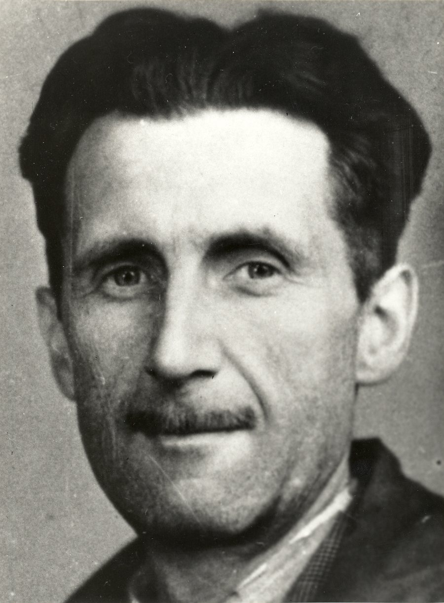
Be a Witness
Chaque élève choisit une réalité de son quotidien qu'on ne voit pas assez : un métier pénible, un lieu oublié, une injustice locale. Il produit une photo ou un court texte, puis le présente à l'oral en 2 minutes.
Les quatre questions à traiter
What did you choose? Where is it? Who is concerned? Why does it matter?
Plan de la séquence
- 1Look at Her Face
Découvrir et décrire Migrant Mother - 2The Woman Behind the Photo
L'histoire de Florence Owens Thompson - 3Orwell Goes to Wigan
Un texte face à une image - 4Hidden Photos
Les photos de l'internement de 1942 - +The pact
Prolongement : débat avec Diane Arbus - 5Big Brother Is Watching You
Propagande et manipulation - 6Be a Witness
Tâche finale et évaluation
Our big question: Can an image or a text change the world?
And the question under it: does being poor make people invisible, or strange, in the eyes of others? Can a photo give back dignity, or take it away?
Fil rouge « Fact or story? ». En séance 2 (Florence), en séance 4 (photos de 1942), en séance 5 (télécrans) et dans le débat, une courte activité compare l'histoire racontée avec des sources citées (Library of Congress, MoMA, National Archives, la famille de Florence, le roman d'Orwell). Le texte de chaque fiche reste intact et se lit d'abord ; l'activité vient après, comme une étape critique : même l'histoire d'une photo se construit. Douter d'une source n'est pas de la méfiance, c'est du respect pour la vérité et pour les personnes photographiées.
Pédagogie de la réussite. Chaque séance avance par petites marches : on montre un modèle avant de demander une production, chaque prise de parole s'appuie sur des amorces de phrases (encadrés bleus « Sentence starters »), et chaque séance se termine par un moment de réussite (encadré vert « Today I can ») où chacun coche ce qu'il sait faire. La grille finale est rédigée en positif : ce que je sais faire.
Dignité d'abord. Ce parcours ne cherche jamais à humilier : il veut éveiller. Certains élèves vivent peut-être eux-mêmes la précarité. Les questions portent sur les photos, les textes, les personnes étudiées et la société, jamais sur la situation des élèves. Personne n'est obligé de parler de sa vie ; le sujet de la tâche finale est libre, et un élève peut choisir un sujet éloigné de lui (un métier observé, un lieu de la ville, un objet).
Supports. Photos d'époque (années 1930-1940, domaine public : Library of Congress, National Archives, Imperial War Museums, Wikimedia Commons), vidéos de sources officielles (PBS, BBC, MoMA, The Met, National Archives, British Pathé, Washington University), textes adaptés avec enregistrement (voix de synthèse naturelles, préparées à l'avance). Aucune image fabriquée.
Je ne conçois pas le professeur assis derrière son bureau pendant toute l'heure : cette époque est révolue. Dans ce parcours, je suis intégrée à chaque étape de la mission, à des places différentes et de manières différentes : à la porte pour accueillir, au tableau pour transmettre, entre les groupes pour observer, à genoux à côté d'un élève pour l'aider, au fond de la salle pour regarder la classe vivre. Savoir se déplacer, se positionner et s'adapter fait partie du métier, au même titre que le contenu. Et si je suis fatiguée, je m'assois, sans aucune culpabilité : c'est prendre soin de soi, parce que ce métier est difficile et qu'il faut le comprendre. Observer, aider, transmettre : cela se fait debout, accroupie ou assise, du moment qu'on reste présent pour chacun.
Madame Carole Paoli Pompougnac
Keeping the room calm · valable pour les six séances
Consignes toujours visibles : la consigne en cours et la suivante restent au tableau ; un élève qui a décroché sait où reprendre sans demander devant tout le monde.
Amorces sur la table : les encadrés « Sentence starters » sont imprimés en bandelettes ; un élève qui bloque en pose une devant lui et commence par là.
Recadrer en privé : s'approcher, parler bas, parler de la tâche et non de l'élève. Pas de bras de fer devant la classe.
Sujets sensibles : on ne demande jamais à un élève de témoigner de sa propre situation. Si un élève choisit d'en parler, on l'écoute sans commentaire et on revient au document.
Lesson 1
Look at Her Face
J'ai choisi d'ouvrir ce parcours par un visage, avant tout mot et toute date. Regarder longtemps une photo, c'est déjà apprendre à voir le monde, et chacun peut dire ce qu'il ressent : il n'y a pas de mauvaise réponse au premier mot. Je veux que chaque élève reparte en sachant décrire une image en anglais, avec les amorces sous les yeux pour oser parler. Mettre du beau partout où je passe commence ici : une grande photographie, regardée avec respect.
In English: We start with a face, before any words or dates. Everybody can say what they feel: there is no wrong first word. Today, you will learn to describe a photo in English, with sentence starters to help you.
Madame Carole Paoli Pompougnac
Déroulement
Warm-up (5 min). Projeter la photo sans titre ni date. Une seule question : What do you feel when you look at this photo? Un mot par élève au tableau.
Description (15 min). Les élèves décrivent avec la fiche ci-dessous, d'abord à deux, puis en classe entière.
Hypothèses (10 min). Who is she? Where is she? When was the photo taken? Les élèves justifient avec must, might, can't.
Révélation (10 min). Le professeur donne le titre, la date et le contexte. On compare avec les hypothèses.
Lesson summary (10 min). Cinq phrases pour décrire la photo.
Transmettre au moment de la révélation seulement : titre, date, contexte, en phrases courtes. Observer pendant le warm-up et la description : on laisse venir les mots, on ne corrige pas encore. Aider en circulant pendant le travail à deux : souffler un mot (worried, holding, foreground) ou montrer du doigt une amorce de la fiche. Aucun mot proposé au warm-up n'est « faux » : on note tout.
Où se placer : À la porte pour accueillir, la photo déjà projetée ; au fond de la salle pendant le warm-up, pour voir la photo avec les yeux des élèves ; entre les binômes pendant la description, à hauteur de la fiche ; au tableau pour la révélation ; pendant la trace écrite, assis à côté d'un élève qui hésite, si besoin.
Describe the photo
- Is it a colour or a black and white photo?
- How many people can you see?
- What is the woman doing with her hand?
- Where are the children looking? Why, in your opinion?
- How does the woman look? Choose: tired, worried, angry, happy, hopeless, strong.
- In the foreground / in the background / in the middle
- On the left / on the right
- She is looking… / She is holding… / The children are hiding…
- She must be poor. She might be a farmer. She can't be rich.
The 1930s in moving pictures: The Dust Bowl (Ken Burns, PBS)
The opening of the documentary The Dust Bowl (2012), official Ken Burns channel · Open on YouTube · Official trailer on PBS
- Watch without sound. Write three things you can see: I can see…
- Watch with sound. Write two words you hear.
- Finish the sentence: In the 1930s, life was hard because…
The story of the photo: Whose Migrant Mother was this?
The Art Assignment, PBS Digital Studios · first 1 min 50 s · Open on YouTube (English subtitles available)
After the “Révélation” only. Watch the first two minutes and answer:
- What is the photo called? When was it taken?
- The video says: “The mother's worried ___.” Complete.
- Were your hypotheses right? I thought she was… and she was / she wasn't…
Contexte pour le professeur
La photo a été prise en mars 1936 à Nipomo, en Californie, dans un camp de cueilleurs de petits pois. Dorothea Lange travaillait pour une agence du gouvernement chargée de montrer la pauvreté des campagnes. La photo est devenue le symbole de la Grande Dépression.
Compléments vérifiés : l'agence s'appelait alors la Resettlement Administration (future Farm Security Administration) ; la fiche de la Library of Congress porte le titre « Destitute pea pickers in California. Mother of seven children. Age thirty-two. Nipomo, California » et l'autre titre « Migrant mother » (Library of Congress, guide de recherche « Migrant Mother »).
Moments clés et plan B
Avant la sonnerie : la photo est projetée sans titre ; une version papier (une pour deux) est prête.
Si la technique lâche : la photo imprimée suffit pour toute la séance ; les deux vidéos passent en prolongement à la maison ou à la séance suivante ; vous lisez vous-même la fiche de la Library of Congress au moment de la révélation.
Ressources
- La photo en haute définition (Library of Congress, libre de droits)loc.gov · Destitute pea pickers in California… (Migrant Mother), 1936 · toute la série de photos
- Vidéos courtes sur l'histoire de la photoWhose Migrant Mother was this?, The Art Assignment, PBS Digital Studios (11 min) · American Masters, Dorothea Lange: Grab a Hunk of Lightning, preview (PBS, 3 min 31)
- La Grande Dépression expliquée simplementIntroducing The Dust Bowl, Ken Burns · bande-annonce officielle, PBS (30 s)
Lesson 2
The Woman Behind the Photo
Derrière la photo la plus célèbre de la Grande Dépression, il y a une femme qui avait un nom, des enfants, une fierté. J'ai choisi de raconter sa vie pour qu'on ne regarde plus jamais un visage comme un simple symbole. Je veux éveiller une question simple et humaine : une photo aide-t-elle toujours la personne photographiée ? Chacun pourra donner son avis en s'appuyant sur les amorces, et chaque avis sera respecté. Douter d'une source, ce n'est pas de la méfiance : c'est du respect, pour la vérité et pour les personnes photographiées.
In English: Behind the famous photo, there was a real woman, with a name, children and a lot of pride. Today, we tell her story. You will discover that a photo can help people, but it can also hurt the person in it. Everybody can give an opinion with the sentence starters. Checking a source is not distrust: it is respect for the truth and for the people in the photos.
Madame Carole Paoli Pompougnac
Déroulement
Rappel (5 min). Describe the photo in three sentences.
Lecture (15 min). Texte ci-dessous, lecture silencieuse puis questions.
Grammaire (10 min). Relever les verbes au prétérit, classer réguliers et irréguliers.
Débat (15 min). Did the photo help Florence? Did it help other people?
Lesson summary (5 min). Une phrase d'opinion par élève : I think the photo… because…
Transmettre le prétérit au moment de la grammaire, à partir des verbes du texte. Observer pendant la lecture silencieuse : qui souligne, qui bloque ? Aider en soufflant le sens d'un mot à voix basse plutôt qu'en traduisant le texte pour tous. Pendant le débat, vous êtes un guide, pas un juge : on relance (« Why? Who agrees? »), on ne donne pas « la » bonne réponse. On parle de Florence et de sa famille avec respect : la pauvreté est une situation, pas une identité.
Où se placer : À la porte, la photo de la séance 1 au tableau ; au fond pendant la lecture silencieuse, pour observer sans peser ; au tableau pour le prétérit ; au milieu des élèves pour le débat et « Fact or story? », à hauteur de leurs yeux ; à genoux à côté de l'élève qui bloque, le temps d'une amorce.

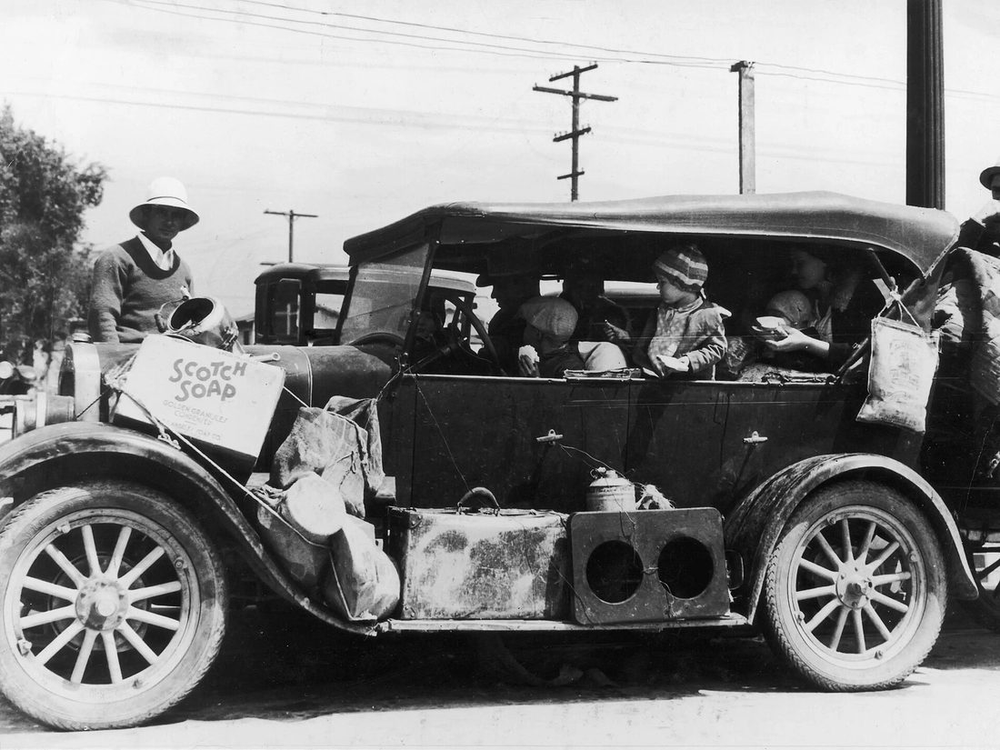
Florence's story
Her name was Florence Owens Thompson. She was born in 1903 in Oklahoma. In the 1930s, she travelled to California with her children to find work in the fields.
In March 1936, a photographer called Dorothea Lange stopped her car near a camp of pea pickers. She took six photos of Florence and her children in ten minutes. She didn't ask her name.
The photo became famous all over the world. Newspapers printed it, and the government sent food to the camp. But Florence never got any money from the photo. Many years later, she said she was not happy about it.
Today, the photo is in museums. People know her face, but very few people know her name.
- Where did Florence go in the 1930s? Why?
- How many photos did Dorothea Lange take?
- Did Lange ask Florence her name?
- What happened after the photo was printed in the newspapers?
- Was Florence happy about the photo? Why not, in your opinion?
Her daughters remember her (1992)
Interview with Katherine McIntosh and Norma Rydlewski, filmed in March 1992 by Blackside for the series The Great Depression · WashU Film & Media Archive · from 0:34 to 1:36 · Open on YouTube
Katherine is the girl on the left in the photo. Norma is the baby. Listen to Katherine (one minute):
- Find two adjectives Katherine uses for her mother.
- What did Florence teach her children? Tick: work for what you get be honest help other people be famous
- Complete: Florence was a … woman because …
Did Florence agree with Lange?
The Art Assignment, PBS Digital Studios · from 2:39 to 4:22 · Open on YouTube
- How many years later did people find out her name? More than … years later.
- What did Florence tell a reporter? “I wish she hadn't …”
- Florence often had two jobs. Name one.
Florence's story: let's check the sources
The text tells the story that most people know. Now we check it, like historians, with sources: the photographer's own words, a museum, a library, Florence's family. Read each box: who says what?
Three questions for every source: Who says it? When? Does another source say the same thing?
1 · How many photos? How long?
2 · Where was Florence born?
3 · Did Lange ask?
4 · Two memories of the same day
- How many photos? Complete: Lange says … photos. MoMA says … photos. Read MoMA's sentence again: why did people think there were only five?
- Complete: In 1903, Florence was born in Indian … . It became Oklahoma in … . Is the story wrong, or does it use today's name?
- Lange didn't ask her name. What did she ask, according to Katherine? She asked if…
- Box 4: Lange says that Florence… but Florence says that…
- Conclusion: why do the stories change? Choose one or two ideas, or write your own: people forget people remember differently a story can be more beautiful than the facts …
- The story says… but the source says…
- Lange remembers… but Florence / Katherine remembers…
- We don't know if… because no source says it.
- I think the truth is… because…
- Maybe people prefer this version because…
What we learn: even the story of a photo is built by people. They remember, they forget, they choose. To tell the truth, we listen to several voices, and especially to the voice of the person in the photo.
Pourquoi cette activité (15 min, pendant le temps de débat ou en prolongement). La fiche donne la version que le grand public connaît : on la garde telle quelle et on la lit d'abord, avec ses questions. Cette étape vient ensuite, comme un moment critique : on ne « corrige » pas le texte, on montre comment une histoire se construit (le souvenir de Lange en 1960, les archives, la mémoire de la famille). C'est le cœur du thème : dire la vérité, c'est aussi savoir d'où vient ce qu'on raconte. Pas de question piège : chaque réponse est écrite dans une source citée, et toutes les conclusions argumentées sont acceptées.
Sources vérifiées. Lange, Popular Photography, février 1960 (« I made five exposures… I did not ask her name or her history ») : guide « Migrant Mother » de la Library of Congress, qui conserve cinq vues de la série et signale deux autres vues au Oakland Museum. Sarah Meister, MoMA, 6 février 2020 : sept vues. Notice MoMA de l'œuvre : dans les années 1970, Florence conteste le récit de Lange (pas de conversation, pas de pneus vendus). Katherine McIntosh, CNN, 2 décembre 2008. Naissance le 1er septembre 1903 à Tahlequah, Territoire indien (Library of Congress) ; État d'Oklahoma le 16 novembre 1907 (Oklahoma Historical Society). Les « dix minutes » circulent souvent, mais je n'en ai trouvé aucune source primaire : on le dit aux élèves simplement, « no source says it ».
- I agree with… / I don't agree because…
- On the one hand… on the other hand…
- The photo helped people because… / The photo used her because…
Moments clés et plan B
Avant la sonnerie : la photo de la séance 1 est projetée pour le rappel.
Si la technique lâche : vous lisez le texte deux fois (lentement, puis normalement) ; les citations des vidéos se lisent dans les corrigés (bouton « Answers ») ; le débat se fait sans vidéo.
Ressources
- Les autres photos de la série (Library of Congress)guides.loc.gov · Migrant Mother Series of Images
- Vidéos sur Florence Owens Thompsonentretien avec ses filles Katherine McIntosh et Norma Rydlewski, 1992 (WashU Film & Media Archive) · Whose Migrant Mother was this?, The Art Assignment, PBS Digital Studios · CNN, 2 décembre 2008 : Katherine McIntosh se souvient
Lesson 3
Orwell Goes to Wigan
Un texte face à une image
Orwell a choisi d'aller voir de ses propres yeux la vie des mineurs du nord de l'Angleterre, et d'en témoigner par l'écriture. Je place son texte face à la photo de Lange parce que les mots et les images ne disent pas le monde de la même manière : comparer les deux, c'est apprendre à regarder. Ce qui me touche dans ce passage, c'est le regard de la jeune femme : la misère ne lui a rien enlevé de son intelligence ni de son humanité. Le contenu est exigeant, et le tableau guide chacun pas à pas.
In English: George Orwell went to see the life of miners with his own eyes, and he wrote about it. Today, we put his text next to Lange's photo: words and images show the world in different ways. The young woman in the text understands her life. Being poor never takes away a person's mind or dignity.
Madame Carole Paoli Pompougnac
Déroulement
Mise en route (5 min). Montrer une photo d'une ville minière anglaise des années 1930. What can you see? Would you like to live there?
Présentation d'Orwell (10 min). Courte vidéo ou fiche : un écrivain qui choisit d'aller vivre chez les pauvres pour raconter leur vie.
Lecture (15 min). Texte adapté ci-dessous.
Comparaison (15 min). Tableau image / texte à compléter à deux.
Bilan (5 min). Which is more powerful for you, the photo or the text?
Supports proposés ici : pour la mise en route, le film d'archives British Pathé (Wigan, 1930) et la photo de mineur de 1942 ; pour la présentation d'Orwell, la biographie de l'Orwell Foundation (lien dans les ressources).
Transmettre le contexte en deux phrases (Orwell, 1936, les villes du charbon du nord de l'Angleterre) avant la lecture. Observer pendant la comparaison texte / photo : laisser les binômes chercher avant de corriger. Aider en montrant la ligne du texte où se trouve la réponse plutôt qu'en la donnant. La femme du texte n'est pas « une pauvre » : Orwell insiste sur ce qu'elle comprend ; on garde ce regard-là dans la discussion.
Où se placer : À la porte pour accueillir ; au tableau pour présenter Orwell ; entre les binômes pendant le tableau de comparaison, d'une table à l'autre ; au fond de la salle pour le bilan, pour que la parole circule entre les élèves.
Wigan in 1930: the end of “Wigan Pier”
British Pathé newsreel, 1930: the old wooden jetty called “Wigan Pier” is taken down · Open on YouTube · The Orwell Foundation: The Road to Wigan Pier
- Watch once. Write three things you can see: I can see water / men / houses…
- Is it a rich town or a poor town, in your opinion? It looks… because…
- Six years later, Orwell came to Wigan. What do you think he saw?
A face from the train
In 1936, the writer George Orwell travelled to Wigan, a mining town in the north of England. He wanted to see how poor workers really lived. He stayed in cheap houses and went down the coal mines.
One day, he left the town by train. From the window, he saw a young woman behind a row of small, dirty houses. It was very cold. She was kneeling on the ground and trying to clean a blocked pipe with a stick.
She looked up at the train. Her face was pale and tired. She was about twenty-five, but she looked forty. Orwell wrote that her eyes showed she understood exactly what was happening to her. She knew her life was hard and hopeless.
Le texte est une réécriture simplifiée de l'épisode du livre, pas une citation d'Orwell.
- Why did Orwell go to Wigan?
- Where was he when he saw the woman?
- What was she doing?
- How old was she? How old did she look?
- Find three adjectives that describe her life.
The photo and the text
| Migrant Mother | The woman in Wigan | |
|---|---|---|
| Country | USA | |
| Year | 1936 | |
| Who made it? | Dorothea Lange | |
| Image or text? | ||
| Her feelings | ||
| What I learn |
- In the photo, we can see… In the text, we can imagine…
- For me, the photo / the text is more powerful because…
- Both women are… / Both show…
Vocabulary
a coal minea minera slumunemployedexhaustedpaleto kneela pipehopelesspoverty
Repères vérifiés pour le professeur. Orwell séjourne à Wigan et dans le nord industriel entre janvier et mars 1936 ; The Road to Wigan Pier paraît en 1937 (Left Book Club), alors qu'il est en Espagne (The Orwell Foundation). « Wigan Pier » était un vieil embarcadère en bois sur le canal, démoli en 1930 : Orwell explique que le nom était devenu une plaisanterie de music-hall. Dans le chapitre 1, depuis le train, il voit une jeune femme qui débouche un tuyau dans une arrière-cour et écrit : “She knew well enough what was happening to her.” (George Orwell, The Road to Wigan Pier, 1937, ch. 1). La photo de mineur ci-dessus date de 1942 et n'a pas été prise à Wigan : on la présente comme une image du travail dans les mines britanniques de l'époque.
Moments clés et plan B
Si la technique lâche : le film d'archives (muet, avec musique) passe en prolongement ; vous décrivez en deux phrases ce qu'on y voit et la comparaison texte / photo se fait sur papier.
Ressources
- Vidéos sur The Road to Wigan PierBritish Pathé, 1930 : la fin du vrai « Wigan Pier » (film d'archives) · The Orwell Foundation, The Road to Wigan Pier (présentation du livre)
- Courtes biographies d'OrwellThe Orwell Foundation, Biography · BBC History, George Orwell (1903-1950)
- Photos de Wigan et des mineurs dans les années 1930mineur britannique au front de taille, 1942 (Imperial War Museums, domaine public) · le film British Pathé ci-dessus montre Wigan en 1930
Lesson 4
Hidden Photos
Les photos de l'internement de 1942
Ces photos ont dérangé le pouvoir au point d'être tenues à l'écart du public pendant la guerre. J'ai choisi cet épisode méconnu parce qu'il montre qu'une image peut faire peur à un gouvernement, et que la vérité finit par revenir. La grammaire du passif prend ici tout son sens : quand on dit « the photos were hidden », on peut taire qui les a cachées. Je ne donnerai pas la réponse morale : je veux que chacun la trouve, avec les documents et les amorces. Douter d'une source, ce n'est pas de la méfiance : c'est du respect, pour la vérité et pour les personnes photographiées.
In English: During the war, these photos were kept away from the public because they showed the truth. Today, you will discover a part of American history that many people don't know, and you will learn the passive: “The photos were hidden.” Then you will decide for yourself: is it right to hide the truth? Checking a source is not distrust: it is respect for the truth and for the people in the photos.
Madame Carole Paoli Pompougnac
Déroulement
Mise en route (10 min). Projeter la photo d'une épicerie d'Oakland, mars 1942, avec une grande pancarte « I am an American » sur la vitrine. Questions : What can you read? Why would someone write this on a shop?
Lecture (15 min). Texte adapté ci-dessous.
Grammaire (10 min). Relever les phrases au passif, puis transformer des phrases actives.
Réflexion (15 min). Why did the army hide the photos? Is it right to hide the truth during a war?
Transmettre les faits clairement (1942, ordre exécutif 9066, environ 120 000 personnes d'origine japonaise déplacées). Observer les réactions aux photos sans les commenter tout de suite. Aider au moment du passif en donnant le modèle au tableau (The photos were hidden. The families were sent…). Sur l'injustice, on ouvre la question (« Was it fair? Why? ») au lieu de donner la réponse morale : les élèves la trouvent seuls avec les documents.
Où se placer : À la porte, la photo « I am an American » déjà projetée ; en retrait sur le côté pendant la découverte des photos, pour laisser venir les réactions ; au tableau pour le passif ; entre les groupes pendant « Fact or story? » ; assis au milieu des élèves pour la réflexion, à la même hauteur : un guide, pas un juge.


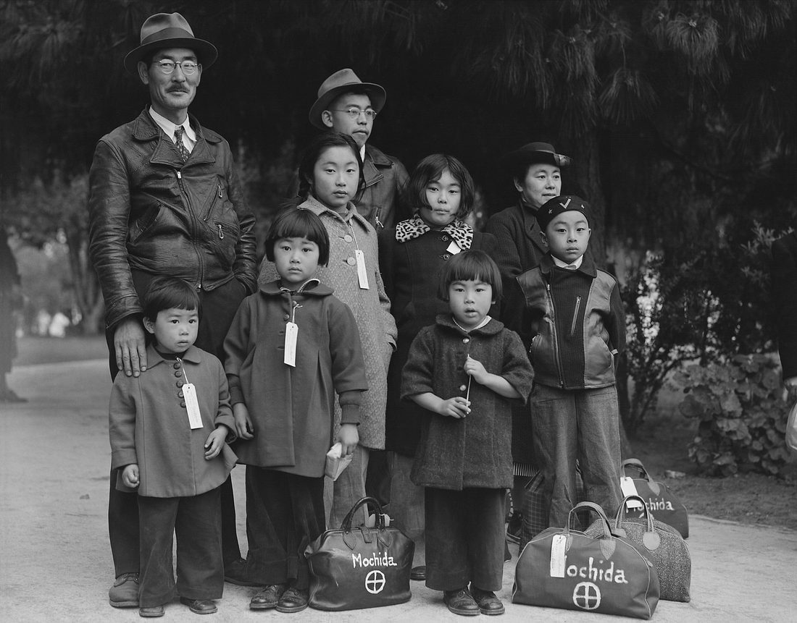

Note: the store was in fact at 401 to 403 Eighth Street and Franklin Street; the original caption says 13th Street (Library of Congress).
The photos nobody saw
In December 1941, Japan attacked the American base of Pearl Harbor. The United States entered the Second World War.
In 1942, about 120,000 people of Japanese origin were sent to camps in the desert. Most of them were American citizens. They lost their homes, their shops and their jobs.
The government asked Dorothea Lange to photograph this. But her photos showed sad families, children with labels on their coats, and people waiting in long lines. The army didn't like them. The photos were hidden for many years.
In 1988, the American government officially apologised to the survivors. Lange's photos were finally published in a book in 2006.
- What happened in December 1941?
- Where were the people of Japanese origin sent?
- Were they foreigners or American citizens?
- Why didn't the army like Lange's photos?
- What did the government do in 1988?
The army hid the photos. → The photos were hidden by the army.
The government sent families to camps. → Families were sent to camps.
Your turn: They closed the shops. / Lange took the photos. / A publisher printed the book.
- The photos were hidden because…
- I think it is right / it isn't right to hide the truth because…
- During a war, a government might… but…
Lange's photos of the internment (PBS, 2 minutes)
American Masters, Dorothea Lange: Grab a Hunk of Lightning (PBS, 2014), clip · Open on YouTube · On PBS
Later, Lange said: “This is what we did. How did it happen? How could we?” (quoted by PBS)
- Who asked Lange to take these photos? The … asked her.
- Did she like this job? Find one word or one sentence.
- Lange says “we”. Who is “we”, in your opinion?
Why were the photos hidden? (Vox)
Vox, 10 January 2022 · Open on YouTube · also: US National Archives, Images of Internment
- What one word is written on many of Lange's photos? “i_ _ _ _ _ _ _ d”
- In which year did many people see the photos for the first time?
- Why did the government not want people to see them? Because they showed…
Hidden photos: let's check the sources
The text tells the story that many people know. Now we check it with an important source: the National Archives, the place where the American government keeps its documents and photos. Read each box: who says what?
Three questions for every source: Who says it? When? Does another source say the same thing?
1 · Hidden? When?
2 · Published in 2006?
3 · Where does the “secret photos” story come from?
- When were the photos kept away from the public? Tick: during the war after the war
- Use the passive, like in the grammar box. Complete: During the war, the photos … (withhold). After the war, they … (keep) in the National Archives. In 1998, they … (put) online.
- Which sentence is closer to the sources? “The photos were hidden for sixty years.” “The photos were kept away from the public during the war; after the war, anybody could ask to see them.”
- Why do many people believe the “secret photos” story? Maybe people prefer this version because…
- The story says… but the source says…
- During the war, the photos were… After the war, they were…
- I think the truth is… because…
- Maybe people prefer this version because…
What we learn: the camps were real, the injustice was real, and the photos were kept away from the public during the war: these are facts. The “secret for sixty years” part is a story that grew later. Even the story of the photos is built by people. To tell the truth, we separate the facts from the story.
Pourquoi cette activité (10 à 15 min, après la grammaire ou en prolongement). La fiche garde la version que beaucoup connaissent ; on la lit d'abord. L'étape « Fact or story? » vient ensuite : les National Archives (2017) distinguent ce qui est vrai (photos retenues pendant la guerre) de ce qui a grandi plus tard (un « secret de soixante ans », né d'un article de novembre 2006). L'injustice de l'internement, elle, n'est jamais remise en question : on le dit clairement. La question 2 réinvestit le passif (were withheld, were kept, were put).
Repères vérifiés pour le professeur. Ordre exécutif 9066 signé par Franklin D. Roosevelt en février 1942 ; environ 120 000 personnes d'origine japonaise, en majorité citoyens américains, sont déplacées et internées. Lange est engagée par la War Relocation Authority ; beaucoup de ses photos sont marquées « impounded » et restent peu vues pendant la guerre ; l'exposition Executive Order 9066 (California Historical Society, 1972) les fait connaître du grand public (Densho Encyclopedia ; Vox). Le livre de 2006 cité dans le texte est Impounded: Dorothea Lange and the Censored Images of Japanese American Internment (Linda Gordon et Gary Y. Okihiro, W. W. Norton). Le 10 août 1988, le Civil Liberties Act présente les excuses officielles du gouvernement et accorde une réparation aux survivants. Nuance (reprise dans l'activité « Fact or story? ») : selon les National Archives, la plupart de ces photos ont été retenues pendant la guerre, puis versées aux Archives en juin 1946 sans restriction d'usage, et toutes sont en ligne depuis 1998 ; le grand public les a surtout découvertes avec l'exposition de 1972 (National Archives, « Correcting the Record »).
Moments clés et plan B
Si la technique lâche : les quatre photos imprimées (une série par groupe) suffisent ; vous lisez la citation de Lange et les corrigés des vidéos ; les vidéos passent en prolongement.
Ressources
- La photo « I am an American » (Library of Congress)loc.gov · Oakland, Calif., Mar. 1942. A large sign reading “I am an American”…
- Les photos de Lange sur l'internementDensho Digital Repository, Dorothea Lange Collection (mars-juillet 1942, légendes d'origine) · National Archives, catalogue
- Vidéos explicatives sur l'internementAmerican Masters, PBS · Vox · US National Archives
Prolongement · entre la séance 4 et la séance 5 · débat
The Pact: Who Gets to Be Seen?
Pour moi, il existe un pacte tacite entre la personne photographiée et celui qui photographie, fondé sur le respect mutuel. Ce pacte met l'humanité au cœur du débat : être pauvre ne fait de personne un objet de curiosité. J'ai voulu confronter trois regards, Lange, Orwell et Diane Arbus, pour que chacun se forge le sien. On parle des œuvres et des personnes étudiées, jamais de soi si l'on ne le souhaite pas, et les amorces sont là pour que tout le monde ose prendre la parole. Douter d'une source, ce n'est pas de la méfiance : c'est du respect, pour la vérité et pour les personnes photographiées.
In English: Between a photographer and the person in the photo, there is a pact: mutual respect. Today, we compare three ways of looking at people: Lange, Orwell and Diane Arbus. Being poor never makes a person strange or less human. Use the sentence starters: everybody's voice matters in this debate. Checking a source is not distrust: it is respect for the truth and for the people in the photos.
Madame Carole Paoli Pompougnac
Our debate question: Does being poor make people invisible, or strange, in the eyes of others?
Is there a pact between the photographer and the person in the photo? Can a photo give back dignity, or take it away?
Transmettre peu : trois repères sur Arbus, puis on laisse les documents parler. Observer pendant le travail en groupes : qui ose prendre la parole avec une amorce ? Aider en tendant une bandelette d'amorces à l'élève qui hésite. Vous êtes un guide, pas un juge : il n'y a pas de bonne réponse attendue sur Arbus ou sur Lange. On protège la parole de chacun et on n'expose personne : on parle des photos et de la société, jamais de la situation des élèves.
Où se placer : À la porte pour accueillir ; brièvement au tableau pour les repères sur Arbus ; entre les groupes, les bandelettes d'amorces à la main ; pendant le débat, au fond ou sur le côté, pour que les élèves se parlent entre eux et pas seulement au professeur.
Three people, three moments
Lange, Popular Photography, February 1960 (Library of Congress)
Her daughter Katherine, in 2008: “We were ashamed of it.”
Lesson 2 · PBS Digital Studios · CNN
Lesson 3 · The Road to Wigan Pier, chapter 1
- Lange speaks of “equality”. Does Florence feel the same? Lange thinks… but Florence…
- Orwell looks at the woman's face. What does he understand? He understands that she…
What was the deal between Lange and Florence?
In Séance 2, we checked the sources. Now, let's read them again with one question: was there a promise?
The Art Assignment, PBS Digital Studios · from 8:35 to 10:00 · Open on YouTube
- What was the deal? Complete: Florence let Lange take the picture because she thought…
- In 1936, did the photo help Florence's family? The photo was printed, but the family…
- In 1983, how did the photo help Florence in the end?
- Was the pact respected? I think the pact was / wasn't respected because…
What we learn: the pact between a photographer and a person is not only about the photo. It is also about what happens after. Listening to Florence and her children is part of telling the truth.
Le pacte, par les sources (vérifié). Les deux récits s'accordent sur l'essentiel : la photo devait « aider ». Lange (1960) parle d'une « sorte d'égalité » ; Katherine (CNN, 2008) dit que Lange a demandé la permission et promis que le nom ne serait pas publié, et que la famille était déjà partie quand la photo est parue. Lange était salariée de l'État fédéral : ses images de cette période sont dans le domaine public, reproductibles par tous (Sarah Meister, MoMA) ; elle ne les a donc pas vendues, mais sa notoriété doit beaucoup à cette photo, ce que la famille a eu du mal à accepter (The Art Assignment, PBS). En 1983, l'appel de la famille dans le San Jose Mercury News suscite lettres et dons pour ses soins (Library of Congress) : la famille commence alors à voir la photo autrement. On ne tranche pas : on laisse les élèves peser les deux côtés, avec les amorces de l'étape 3.
Diane Arbus (1923 to 1971), New York
Diane Arbus was an American photographer. She photographed people in the streets and homes of New York: children, couples, families, circus and carnival performers, people that many others did not look at. She once said: “For me the subject of the picture is always more important than the picture. And more complicated.”
The Metropolitan Museum of Art, Diane Arbus: In the Beginning (2016), 1 min 38 · Open on YouTube
Her photos are protected by copyright: we look at them on the museums' websites.
- MoMA, New York: Diane Arbus (works online)
- The Met: Diane Arbus: In the Beginning
- SFMOMA, San Francisco: Diane Arbus · a short talk about A Young Brooklyn Family Going for a Sunday Outing, N.Y.C. (1966)
- Watch the video. Complete: “You feel the authentic quality of each of the ___.”
- On the MoMA page, choose one photo. Write its title and three things you can see.
- Look at the person's eyes. The person looks… / I think the person agreed / didn't agree to be photographed because…
Is there a pact between the photographer and the person in the photo?
- Did the photographer respect the person? Think of Lange and Florence, then of Arbus.
- Does poverty make people invisible, or strange, in the eyes of others?
- Can a photo give back dignity, or take it away?
- Orwell writes about a face he saw for one second. Is a text kinder than a photo, or not?
- I think there is a pact because… / I don't think there is a pact because…
- In my opinion, Lange respected Florence because… / didn't respect her because…
- Florence wasn't happy because… Lange thought…
- When people are poor, others sometimes don't see them / see them as…
- A photo can give back dignity when… / A photo can take dignity away when…
- Like the woman in Orwell's text, the person in this photo understands…
- Arbus looks at people who… I find it… because…
- I agree with you, and… / I see your point, but…
Final sentence (written): A good photographer respects the person in the photo when…
Repères vérifiés pour le professeur. Diane Arbus (New York, 1923-1971) photographie à partir de la fin des années 1950 à New York (Times Square, Coney Island, Lower East Side) : enfants, couples, familles, artistes de cirque et de fête foraine, personnes en marge. Exposée en 1967 dans New Documents au MoMA ; rétrospective au MoMA en 1972, la même année où elle est la première photographe américaine montrée à la Biennale de Venise (MoMA ; Smithsonian American Art Museum ; The Met). Ses archives sont conservées au Metropolitan Museum depuis 2007. Ses images sont protégées (© The Estate of Diane Arbus) : on les consulte uniquement sur les sites des musées, on ne les copie pas.
La question de fond, sans jargon. Être pauvre fait-il de quelqu'un un objet de curiosité, voire un « monstre » aux yeux des autres ? La pauvreté retire-t-elle une part d'humanité ? Le parcours répond par les documents : Florence était « a strong lady, a very proud lady », la femme de Wigan comprend parfaitement sa situation, et Arbus disait que la personne photographiée comptait plus que la photo. On laisse les élèves formuler eux-mêmes : la pauvreté n'enlève pas l'humanité, c'est le regard des autres qui peut le faire.
Personne n'est exposé. Aucune question ne porte sur la situation personnelle des élèves ; on ne demande à personne de raconter sa vie. Si un élève parle de lui, on l'écoute, on remercie, on revient au document.
Moments clés et plan B
Durée : une séance, ou deux temps de 25 minutes en fin de séances 4 et 5.
Si la technique lâche : pas d'image d'Arbus imprimée (droits) : vous décrivez une photo à voix haute à partir de la page du MoMA consultée avant le cours, et le débat s'appuie sur les trois citations de l'étape 1.
Lesson 5
Big Brother Is Watching You
En Espagne, Orwell a vu des journaux mentir, et il ne l'a jamais oublié. J'ai choisi ses deux grands livres et une photo truquée parce que savoir repérer une manipulation est une force pour toute la vie, dans un monde rempli d'images. Je ne vise aucun parti ni aucun média : je transmets une méthode, quatre questions simples que chacun peut appliquer. Je veux que chaque élève reparte en se sentant capable de vérifier une image. Douter d'une source, ce n'est pas de la méfiance : c'est du respect, pour la vérité et pour les personnes photographiées.
In English: In Spain, Orwell saw newspapers tell lies, and he never forgot it. Today, you will discover Animal Farm, 1984 and a photo that was changed to erase a man. You will learn four simple questions to check an image: it is a skill for life. Checking a source is not distrust: it is respect for the truth and for the people in the photos.
Madame Carole Paoli Pompougnac
Déroulement
Mise en route (10 min). Écrire au tableau les trois slogans de 1984 : War is peace. Freedom is slavery. Ignorance is strength. Question : Are these sentences true? Why would a government say them?
Lecture (15 min). Texte adapté ci-dessous.
Activité image (15 min). Montrer deux photos de Staline au bord d'un canal, avant et après : un homme a disparu de la seconde. Spot the difference, puis Why was he erased?
Lien avec aujourd'hui (10 min). Fake news, photos retouchées, images créées par intelligence artificielle. How can you check if an image is true?
Transmettre les repères sur Orwell et les deux livres, simplement. Observer pendant « Spot the difference » : on laisse chercher, le premier qui trouve ne crie pas, il lève la main. Aider pendant la lecture en soufflant un mot (chase away, equal, rules). Pour le lien avec aujourd'hui, on ne vise aucun média ni aucun parti : on donne une méthode (les 4 questions), pas une opinion.
Où se placer : À la porte, les slogans déjà écrits au tableau ; au tableau pour lancer la séance ; entre les binômes pendant « Spot the difference », à hauteur des photos avec eux ; au fond de la salle pendant le lien avec aujourd'hui, pour écouter les idées circuler.
BBC News: George Orwell's 1984, why it still matters
BBC News · the first 1 min 10 s · Open on YouTube
- Listen to the beginning: write the three slogans.
- Where did Orwell see newspapers telling lies? In…, during the…
- True or false: the Ministry of Truth in the book was inspired by Orwell's job at the BBC.
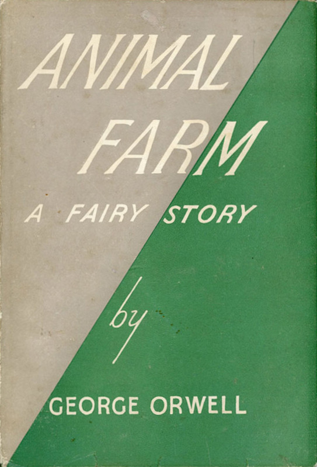
Orwell's warnings
George Orwell fought in the Spanish Civil War in 1937. There, he saw that newspapers told lies about what was really happening. He never forgot it.
In 1945, he wrote Animal Farm. The animals of a farm chase away the farmer. At first, they decide that all animals are equal. But the pigs take power and slowly change the rules. At the end, the famous rule says: “All animals are equal, but some animals are more equal than others.” Several publishers refused the book at first.
In 1949, he wrote 1984. In this book, a government called the Party watches everybody with cameras called telescreens. Its leader is Big Brother. The hero, Winston, works at the Ministry of Truth. His job is to change old newspapers and photos so that the Party is always right.
- What did Orwell discover in Spain?
- Who takes power in Animal Farm?
- Explain the rule “some animals are more equal than others” in your own words.
- How does the Party watch people in 1984?
- What is Winston's job? Is it a real “Ministry of Truth”?
- In Spain, Orwell discovered that…
- In Animal Farm, the … take power.
- This rule means that some animals have more…
- The Party watches people with…
- Winston's job is to… It is not a real Ministry of Truth because…
Telescreens: let's go back to Orwell's book
Our text is a short, simple version of the novel. Let's compare it with Orwell's own words, in chapter 1 of 1984.
- What is a telescreen? Tick all the good answers: a TV a camera a microphone
- Is our text wrong? wrong simplified: it gives only one part of the truth
- Why is a two-way screen frightening? It is frightening because you never know…
- Winston changes old newspapers and photos. In 1984, who decides what the story is? The … decides.
- Our text says… but Orwell wrote…
- A telescreen is not only a camera, it is also…
- I think the simple version is useful / not enough because…
- In 1984, the person who tells the story…
What we learn: a simple version is not always a false version, but it can hide part of the truth. To tell the truth, we go back to the original text. In 1984, the Party controls the story: that is why Orwell wants us to check.
Pourquoi cette activité (10 min, après les questions). Le texte de la fiche reste tel quel : il donne l'idée essentielle. On revient ensuite au roman (chapitre 1) : le télécran est un écran à double sens, qui diffuse et qui capte l'image et le son (« The telescreen received and transmitted simultaneously »). On fait distinguer « simplifié » et « faux » : c'est la même démarche que pour Florence (séance 2) et pour les photos de 1942 (séance 4), et elle prépare les quatre questions pour vérifier une image.
Spot the difference
- Spot the difference: In the first photo, there is… In the second photo, there isn't…
- Why was he erased? He was erased because…
- Who in 1984 does the same job? (Look at the text.)
Who published it? When was it taken? Can I find it on another reliable website? Does anything look strange (hands, shadows, text)?
Two films, two trailers
Animal Farm (1954), animated film by John Halas and Joy Batchelor, trailer · Rotten Tomatoes Classic Trailers · YouTube
Nineteen Eighty-Four (1984), film by Michael Radford with John Hurt and Richard Burton, teaser · Rotten Tomatoes Classic Trailers · YouTube
- Animal Farm: which animals can you see? I can see pigs, …
- 1984: what colours do you see? How do the people look? They look…
- Which film would you like to watch? I'd like to watch… because…
Repères vérifiés pour le professeur. Orwell arrive en Espagne fin 1936 et combat sur le front d'Aragon en 1937 ; Animal Farm paraît en août 1945 après plusieurs refus d'éditeurs ; Nineteen Eighty-Four paraît en juin 1949 (The Orwell Foundation). Dans le roman, le télécran est un écran à double sens : on le regarde et il vous regarde (BBC News : « the two-way telescreen »). Nikolaï Iejov, chef de la police politique (NKVD) de 1936 à 1938, est arrêté en 1939 et exécuté en 1940, puis effacé des photos officielles.
Moments clés et plan B
Si la technique lâche : les deux photos de Staline imprimées côte à côte (une paire par binôme) ; vous lisez le texte deux fois ; les bandes-annonces passent en prolongement.
Ressources
- Résumés vidéo d'Animal FarmBBC Bitesize, Animal Farm (vidéo : intrigue, personnages, thèmes) · BBC Teach, Animal Farm: Plot
- Vidéos courtes sur 1984BBC News, George Orwell's 1984: Why it still matters · The Orwell Foundation, Nineteen Eighty-Four
- Staline et Iejov : la photo retouchéeavant (Wikimedia Commons) · après (Wikimedia Commons)
Lesson 6
Be a Witness
Après Lange et Orwell, c'est au tour des élèves d'être témoins. Le sujet est libre : un lieu, un métier, un objet, une réalité qu'on ne regarde pas assez ; personne n'a à exposer sa propre vie. Je donne d'abord un modèle, puis une fiche et des amorces, pour que chacun réussisse ses deux minutes de parole. La grille dit ce que l'élève sait faire, parce que je crois qu'on progresse en voyant ses réussites.
In English: Now it's your turn to be a witness, like Lange and Orwell. You choose your subject: a place, a job, an object, something people don't look at enough. You listen to an example first, then you prepare with your card. You will speak for two minutes, and you can do it.
Madame Carole Paoli Pompougnac
Déroulement
Retour sur la problématique (10 min). Can an image or a text change the world? Chaque élève donne un exemple vu dans la séquence.
Préparation (20 min). Les élèves finalisent leur photo ou leur texte et remplissent la fiche de préparation. Les photos peuvent être prises avant la séance avec le téléphone, sans visage reconnaissable sans autorisation.
Passages (le reste de la séance, et la suivante si besoin). 2 minutes par élève, puis une question de la classe.
Transmettre le modèle d'abord : on écoute l'exemple de présentation avant toute préparation. Aider pendant la préparation en circulant, carte par carte : une amorce, un mot, une phrase à reformuler. Observer pendant les passages, grille en main, sans interrompre ; on note d'abord ce qui est réussi. Le sujet reste le choix de l'élève : on n'attend aucun témoignage personnel, et un sujet « simple » (un arrêt de bus, un métier observé) est aussi valable qu'un autre.
Où se placer : À la porte, avec un mot d'encouragement pour chacun ; entre les tables pendant la préparation, à genoux à côté de la carte d'un élève ; au fond de la salle pendant les passages, assis si besoin, pour que l'élève parle à la classe et non au professeur ; debout pour féliciter à la fin de chaque passage.

MoMA: “Dorothea Lange: Words & Pictures”
The Museum of Modern Art, New York, 2020 · Open on YouTube
- Listen and complete: “A human face is the universal ___.”
- Why do photographers show faces, in your opinion? Because a face shows…
- Your photo can show a place, an object or hands at work, without a face. What will be in your photo?
My witness card
What: I chose…
Where: It is in… / It happens in…
Who: The people concerned are…
Description: In the foreground… In the background…
Why it matters: I think people should know about this because…
Link with the learning journey: Like Dorothea Lange / like George Orwell, I want to show…
I chose a photo of the bus stop near my school. It is on a busy road, with no shelter and no bench. Every morning, many students wait there in the rain. In the foreground, you can see a girl with a wet backpack. People must think it's not important, but students wait there for 20 minutes every day. Like Dorothea Lange, I want to show a problem that nobody looks at.
Un métier de leur filière vu de près · un lieu abandonné de leur ville · le travail d'un parent · l'accès aux transports · le prix des repas · un commerce qui ferme
Grille d'évaluation de la tâche finale
| Critère | Points |
|---|---|
| Je décris ce que j'ai choisi (what, where, who) | /5 |
| J'explique pourquoi c'est important | /5 |
| J'utilise le présent, le prétérit et un modal | /4 |
| Je parle de façon claire et compréhensible | /4 |
| Je réponds à une question de la classe | /2 |
| Total | /20 |
Photos et dignité. Pas de visage reconnaissable sans autorisation ; pas de photo de personnes en difficulté sans leur accord ; on préfère les lieux, les objets, les mains au travail. Le sujet est libre : aucun élève n'a à montrer sa propre situation. Un texte court peut remplacer la photo.
Moments clés et plan B
Avant la sonnerie : l'ordre de passage est affiché ; les volontaires commencent.
Si la technique lâche : l'élève décrit sa photo de mémoire avec sa carte, ou présente son texte ; vous lisez vous-même l'exemple de présentation.
During your work placement · Pendant la PFMP
On placement: keep travelling with us
You are away from school for several weeks, learning your job in a company. You do not stop the learning journey: you follow the same content as the class, at your own pace, on your phone, in the evening or at the weekend. Count about 30 to 40 minutes a week. When you come back, you will be ready for the final task, and you will bring something nobody else has: a photo and a caption from the world of work.
→ Every week, open one tab of this site (the links are below). Listen to the recording twice, read the transcript, then do the quiz: the answers are checked on the page, and the keys appear with the “Answers” button at the top.
→ Every week, do one mission linked to your workplace. Keep your work in a notebook or send it on the ENT if your teacher asks you to.
→ Every week, check yourself with the mini-quiz on this page (keys included).
→ Ask your tutor first. No permission, no photo.
→ No one’s face without their agreement. Hands at work, tools, a workspace, a detail: these make great photos too.
→ No confidential information: no screens, documents, customers’ names, prices, plans or products that are not public.
→ Respect the safety rules of your workplace: never take a photo while you are using a machine, a vehicle or a tool.
→ If photos are not allowed at all, that is fine: describe the scene in words, as if you were writing the caption of a photo. Lange, too, was forbidden to photograph some things (lesson 4).
Your mission, in a Lange-style caption
Computer voices: Michael, then Heart (American English).
Transcript
Here is a model caption about an imaginary workplace, written for this learning journey. Bakery, Lyon, France. Six o’clock in the morning, the fourteenth of January. A young baker takes the first loaves out of the oven. He has been working since three o’clock. The owner says: “In this job, you go to bed when the city wakes up.” Photograph taken with the permission of the owner.
Now it’s your turn. Choose a scene at your workplace and ask your tutor for permission. Take one photo, with no one’s face unless they agree, and no confidential information. Then write your caption: the place, the date, the time, what the person is doing, and one sentence in the words of someone who works there.
Week by week
The plan follows the six compulsory weeks of PFMP in Terminale. If your placement lasts longer (up to eight weeks in Première, or two extra weeks in Terminale if you choose them), continue with weeks 7 and 8. If it is shorter, your teacher will tell you which weeks to choose.
Out in the field → open tab 1
Listen and check: recording “Who was Dorothea Lange?”, then the quiz. Song: Woody Guthrie, “Do Re Mi” (official recording linked in tab 1).
Mission · Field notes. Like Lange, watch quietly. Every day, note one scene at your workplace in English, in one sentence: Monday, 8 a.m.: a delivery driver unloads boxes in the rain. Five sentences by Friday.
Migrant Mother → open tab 2
Listen and check: “Nipomo, 1936 → Modesto, 1978”, the true/false quiz, and the two voices (Lange and Florence Owens Thompson).
Mission · Your photo. With your tutor’s permission, take one photo of a scene from your work (see the rules above). Write its caption in 40 to 50 words, like the model: place, date, time, what the person is doing, one quotation.
The thumb → open tab 3
Listen and check: “The thumb that disappeared”, the editor quiz, and the two real-life cases.
Mission · Honest editing. Look at your photo of week 2. Which changes are honest (light, a small crop)? Which would be a lie (removing an object, adding something)? Write three sentences: I could… · I would never… because…
Impounded 1942 → open tab 4
Listen and check: “1942: a government order, a photographer, and a correction”, and the photo-caption matching task. Poem: the two lines by Langston Hughes.
Mission · Outside the frame. At your workplace, some things cannot be photographed. List two of them and explain why in English: We are not allowed to photograph… because… Then compare: why was Lange not allowed to photograph barbed wire? Is it the same kind of reason?
The film and the pronunciation lab → tab 5 · tab 6
Watch and check: the trailer and the quiz of tab 5. Practise: blocks 1 to 4 of the pronunciation lab, with the slow buttons.
Mission · Record your caption. Record your week 2 caption on your phone (30 seconds). Listen to yourself with the pair-coach grid of tab 6 (stress, pauses, falling tone). Record it a second time. Keep the better version.
The passive → open tab 7, lesson 2
Learn and check: steps 1 and 2 of the grammar focus, then the gap-fills at three levels (keys on the page).
Mission · Your audio guide. Rewrite your caption as a short audio guide (one minute) with at least two passives: This photo was taken… · Bread is baked here every night… Record it. This is your first draft for the final task.
The press, the debate, the final task → tab 7 · tab 8
Week 7: lesson 1 of tab 7 (the press): listening, “Who said what?”, headlines. Mission: choose your role for the debate and write your one-minute speech (80 to 100 words).
Week 8: tab 8 (final task): listen to the model audio guide, analyse it with the quiz, and prepare your keyword card in five boxes.
Welcome back! While the teacher calls the register, write in English:
- one thing you learned at work, in one sentence;
- the caption of your workplace photo (or of the scene you described), from memory;
- one thing from the learning journey you want to ask about.
Classmates who stayed at school: write one thing you learned in class, to tell a returning classmate.
Lange said a photographer must “see what is really there”. At work, you see things that visitors never notice. What would you like people to see about your job?
Pendant la PFMP, l’élève suit le même parcours que la classe, sans version allégée : chaque semaine, un onglet du site (écoute, transcription, quiz corrigé), une mission liée au lieu de stage et un mini-quiz avec corrigé. La mission centrale : photographier une scène de travail avec l’autorisation du tuteur (sans visage sans accord, sans information confidentielle), puis en écrire la légende à la manière de Lange, l’enregistrer et la transformer en audioguide. Au retour, un bell-ringer de réintégration fait le lien avec la classe.
Mode d’emploi (simple). Avant le départ : montrer cet onglet en classe (5 minutes), donner le lien ou un QR code, vérifier que chaque élève peut ouvrir un enregistrement sur son téléphone. Pendant la période : une remise par semaine sur l’ENT (la légende, puis l’enregistrement), un retour bref du professeur (une réussite, un conseil). Lors de la visite de stage, on peut demander à voir la photo et la légende. Au retour : bell-ringer de réintégration, puis l’élève rejoint la tâche finale avec sa photo de travail comme sujet possible, en plus des photos de Lange. Les photos de lieux de travail restent dans le cadre de la classe et de l’ENT : pas de publication sans l’accord de l’entreprise et des personnes concernées.
Jour du retour. Le bell-ringer de réintégration est affiché et imprimé avant l’entrée ; les élèves revenus de PFMP et ceux restés en classe travaillent sur la même consigne, puis échangent en binômes mixtes (minutes 5 à 10). Si la technique lâche, la consigne se lit au tableau.
Durées officielles des PFMP après la réforme de la voie professionnelle (baccalauréat professionnel, vérifiées en octobre 2026) : 4 à 6 semaines en seconde, 6 à 8 semaines en première, 6 semaines obligatoires et certificatives en terminale, soit 16 à 20 semaines sur le cycle. Depuis la rentrée 2026, la terminale comporte en plus deux semaines d’accompagnement personnalisé avant la mi-mars (avant la clôture des vœux Parcoursup) : selon son projet, l’élève fait soit deux semaines de PFMP supplémentaires, gratifiées par l’État, qui s’ajoutent aux six semaines obligatoires, soit deux semaines de préparation à la poursuite d’études. Un élève de terminale qui choisit l’insertion professionnelle passe donc jusqu’à 8 semaines en entreprise ; les autres, 6. Ces deux semaines remplacent le « parcours différencié » de fin d’année (6 semaines en 2024-2025, 4 semaines en 2025-2026). Les épreuves écrites du bac professionnel ont lieu début juin à partir de la session 2027 (français : mardi 8 juin 2027, 8 h-11 h). Le plan ci-dessus suit les six semaines obligatoires ; les semaines 7 et 8 servent aux deux semaines supplémentaires de terminale et aux PFMP plus longues de première.
Sources : arrêté du 22 janvier 2024 relatif aux périodes de formation en milieu professionnel (JORF du 3 février 2024) ; note de service du 4 mars 2024, BO n° 11 du 14 mars 2024 (MENE2404141N) ; éduscol, « Foire aux questions : réorganisation du cursus préparant au baccalauréat professionnel » ; note de service du 15 décembre 2025, BO n° 48 du 18 décembre 2025 (année 2025-2026) ; Service-Public.fr, « Bac professionnel : du changement à la rentrée 2026 », 27 février 2026 ; éduscol, « Le parcours personnalisé en terminale professionnelle » (septembre 2026) ; académie de Montpellier, « Réforme des lycées professionnels : ajustements en terminale ». Charte du cours →
Pour le professeur · Principes de la séquence
Charte du cours
Le désordre en classe n’est pas une fatalité. Il naît le plus souvent d’un cours qui n’a pas été pensé pour les élèves qui sont devant nous, et d’une organisation qui prive le professeur des premières minutes. Cette charte réunit les principes qui fondent cette séquence et toutes les autres.
- Un cours exigeant est la première règle de disciplineLe chahut vient d’abord de cours trop pauvres, où il n’y a rien à comprendre, ou de cours qui ne sont pas conçus pour les élèves. Un contenu riche, clair et bien construit retient l’attention mieux que n’importe quelle sanction.
- Le professeur se montre à la hauteurIl maîtrise son sujet, prépare chaque séance et doit pouvoir impressionner ses élèves : par ce qu’il sait, par ce qu’il leur fait découvrir, par la qualité de sa langue. Une classe respecte un cours qui l’élève.
- Élever le niveau sans effrayerRenoncer à l’exigence ne protège personne : à force de plier l’échine et de baisser le niveau, le professeur perd le respect de la classe et les élèves perdent ce qu’ils sont venus chercher. On exige beaucoup, et l’on donne les moyens d’y parvenir : modèles, enregistrements, étapes claires, trois niveaux d’exigence.
- Concevoir le cours pour les élèves réelsLe cours est pensé pour ces élèves-là : leur niveau, leur curiosité, leur futur métier ou leurs études. Il est ensuite dispensé comme il faut : consignes brèves, supports prêts, voix posée, rythme soutenu.
- Pas une seconde d’ennuiChaque minute est prévue. Les élèves ne doivent jamais avoir le temps de s’ennuyer, car l’ennui ouvre la porte au bazar. Les transitions sont préparées et la tâche suivante est toujours prête.
- Les cinq premières minutes décident de toutC’est au début du cours que tout peut basculer. L’appel, la sortie des cahiers et la mise en route cassent le démarrage de la séance. Ces minutes ne doivent pas rester vides : une tâche d’entrée en cours, affichée avant l’arrivée des élèves, les met au travail dès qu’ils entrent, pendant que le professeur fait l’appel. Cette tâche est ensuite reprise dans la séance ; elle n’est jamais un simple passe-temps.
- Rendre les premières minutes à l’enseignementLes cours deviennent aussi ingérables parce que l’on demande au professeur d’accomplir des tâches administratives avant même que le cours commence : faire l’appel, renseigner PRONOTE, déposer les exercices en ligne, alors que la classe suivante arrive déjà. Ces tâches ont leur utilité, mais elles devraient être prises en charge ailleurs, à un autre moment, par d’autres personnes ou selon une autre organisation. C’est l’organisation d’ensemble qui est à repenser, pour que les premières minutes appartiennent à l’enseignement.
- Être présent dans sa têteLe professeur fait cours l’esprit libre, attentif à la classe et au contenu, et non guidé par la peur du chahut. La peur pousse à improviser ; la préparation libère.
- Boire et aller aux toilettes : mon engagementDans mon cours, chaque élève peut garder une gourde d’eau sur sa table et boire quand il en a besoin, même pendant qu’il travaille : de l’eau uniquement, pas de soda ni de boisson sucrée. Je ne refuse jamais d’aller aux toilettes à un élève qui en a besoin. Empêcher quelqu’un de boire ou d’aller aux toilettes est cruel, et cela ralentit le cerveau. Nos élèves sont des corps vivants : bien s’hydrater aide leur santé et diminue la fatigue. J’ai remarqué que les jeunes étudiants chinois gardent tous une gourde en classe ; c’est un geste simple que je veux voir dans ma salle.In my class, you may keep a water bottle on your desk and drink whenever you need to, even while you work: water only, no sodas. If you need the toilet, I will never say no.
Repères vérifiés sur l’eau et l’attention
C. J. Edmonds et D. Burford, « Should children drink more water? The effects of drinking water on cognition in children », Appetite, 52(3), 2009, p. 776-779 (doi:10.1016/j.appet.2009.02.010) : 58 enfants de 7 à 9 ans ; ceux qui ont reçu de l’eau en plus se disent moins assoiffés et réussissent mieux des tâches d’attention visuelle.
D. Benton et N. Burgess, « The effect of the consumption of water on the memory and attention of children », Appetite, 53(1), 2009, p. 143-146 (doi:10.1016/j.appet.2009.05.006) : 40 enfants d’environ 8 ans et demi ; meilleure mémoire après 300 ml d’eau, sans effet mesuré sur l’attention soutenue.
Ces deux études portent sur de jeunes enfants et de petits effectifs : elles invitent à la prudence, mais vont dans le même sens. Côté santé publique, Manger Bouger (Santé publique France) rappelle que l’eau est « la seule boisson recommandée » et conseille de limiter le plus possible sodas et boissons sucrées ; le NHS recommande 6 à 8 verres de liquide par jour et précise que les enfants devraient éviter complètement les boissons gazeuses sucrées.
Un cours bien conçu et bien mené est la meilleure protection du professeur et le premier respect dû aux élèves.
Ce que cela change dans ce voyage
Chaque séance s’ouvre sur une tâche d’entrée en cours de cinq minutes, à projeter avant la sonnerie (bouton Project full screen) et reprise dans les minutes qui suivent ; l’encadré professeur donne un minutage minute par minute ; chaque tâche principale existe en trois niveaux, choisis selon les besoins de chaque élève et jamais selon sa voie ; un travail de prononciation exigeant figure dans chaque séance, avec des enregistrements préparés à l’avance. Les élèves de voie professionnelle en PFMP suivent le même voyage grâce à un parcours dédié, avec une tâche de réintégration à leur retour.
Mettre du beau partout où je passe.
Put beauty wherever I go.
For teachers: marking grid for written work (out of 20, lycée général et technologique)
Use this grid for every piece of written work in the sequence. The mark stays between 0 and 20: never below 0, never above 20.
Base: 10 points if the task is met.
| Bonuses (up to plus 10) | Points |
|---|---|
| Clear plan, followed | +2 |
| Introduction | +1 |
| Conclusion | +1 |
| Linking words | +1 |
| Figures of speech | +1 |
| Integrated quotations | +2 |
| General knowledge | +2 |
| Points taken off (up to minus 11) | Points |
| Grammar: more than 4 errors | minus 3 |
| Vocabulary: more than 4 errors | minus 5 |
| Phrasing or reasoning: more than 2 errors | minus 3 |
Worked example: task met (10); plan, introduction and quotations (plus 5); grammar (minus 3). Total: 12 / 20.
© 2026 Madame Carole Paoli Pompougnac · Creative Commons BY-NC-SA 4.0 licence: you may use it with credit, no commercial use, no changes. Images: see individual credits.